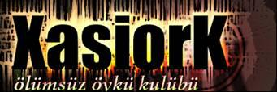
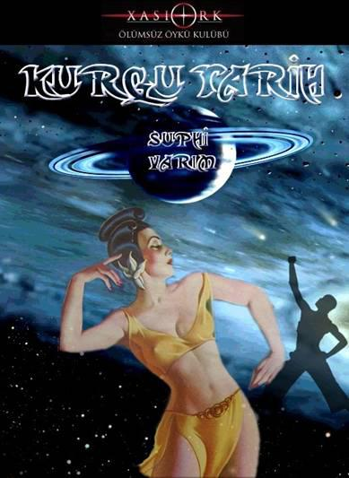

Xasiork Ölümsüz Öykü Kulübü sunar…
KURGU TARİH
Yazan: Suphi Varım
Yayına Hazırlayan: Arzu Kayhan
Yayın Yönetmeni: Orkun Uçar
Kapak: Oğuzhan Poyraz
Yayın Tarihi: 01.10.2004
Xasiork e-posta: xasiork@xasiork.net
Suphi Varım e-posta: suphi.varim@izto.org.tr
Xasiork Ölümsüz Öykü Kulübü’nde yayınlanan “e-kitap”ların
her hakkı yazarına © aittir.
Yazarı eserini başka bir şekilde değerlendirmek istediği zaman yayından çekebilir.
Eserdeki ifadelerin sorumluluğu yazarına aittir.
XÖÖKK
011004K02
“Kurgu Tarih”e Başlarken
Yayımevini ilk açtığımız günlerde İzmir'den Suphi Varım'dan "Kurgu Tarih" adlı dosya geldi.
İlk satırları bir önyargı ile okudum. (bilirsiniz editörlerin çoğu kitapları ilk sayfalar ile yargılar bazen ilk beş - on sayfadan sonrasını beğenmemişse okumaz.) Ama herhangi bir haksızlık yapma korkusuyla devam ettim ve hazineyi keşfettim; kesinlikle benzeri olmayan bir kitaptı.
Birçok öykünün yap-boz oluşturarak meydana getirdiği, ama genel konunun bazen ucunu kaçıracakmış gibi hissetseniz bile yoluna girip tekrar devam ettiği ilginç bir yapıt.
Nitekim e-kitap yayına başladığımız zaman Suphi Varım'ın bu eser ile okuyucuya ulaşması gerektiğini çünkü bu kitapta kalırsa bir yazar olarak önemli bir kariyerin engelleneceğini düşündüm.
Zira bir yazarın ilk kitabının önündeki çok önemli bir engeli yıktığını, o baraj yıkılınca yaratıcılığın bir sel misali geldiğini bilirim.
Evet çok ilginç bir kitap geliyor.
Ben iyi bir kitabı okurken içinde bulunduğunuz gerçeklikten kopmanıza ve bitirdiğinizde sanki içiniz boşalmış, sersemlemiş gibi hissetmenizle saptarım. Bu kitap çok iyi bir kitap ve gelecek de inanılmaz eserler verebilecek bir yazarın kariyerinin başlangıcıyla tanışacaksınız.
Orkun Uçar
Xasiork E-kitaplar Yayın Yönetmeni

SUNUŞ
Düşlerimiz, hayallerimiz, beklentilerimiz vardır.
Zaman zaman olduğumuzla olmak istediğimiz arasındaki uçurumda gider geliriz.
Tüm bunlar, aklımızla algıladığımız evrenle sınırlıdır.
Ama bunun ötesinde-diyelim ki paralel evrenlerde-neler olur bilemeyiz. Belki düşlerimiz, hayallerimiz, beklentilerimiz başka evrenlerde bizden bir yansıma olarak gerçekleşiyordur. Belki rüya dediğimiz olay, gerçeğin kendisidir. Belki her şey zihnimizin uydurmasıdır veya zihnimiz gözlemleyebildiğimiz evreni yanlış algılıyordur. Belki ruhumuz kuantum sıçramaları yapan bir devingendir. Belki Harikalar Dünyasındaki Alice, belki de Schrödinger’in kedisiyiz.
Kurgu Tarih, bu belkilerin bir sonucudur.
Ama belkilere yanıt verme peşinde koşmaz. Sadece iç içe geçmiş öykülerle okuyucuya hoşça vakit geçirtmeyi amaçlar.
Romandaki her şey, düş ve eğlencedir. Gerçekle bağlantı aramayın. Ama yine de bilemem. Malum ya, herkesin gerçeği kendisine aittir.
Suphi VARIM

KURGU TARİH
SUPHİ VARIM
KURGUYA BAŞLANGIÇ
BATI İSTANBUL, 2215
Falcı kadın, dışarıya çıkan adamı bir süre izledi. Adam, iki büklüm olmuş, hareketli yaya geçidine doğru ilerliyordu.
Otomatik geçit durmuş, araçlara yol açmıştı. Ama adamın buna aldırdığı yoktu. Kendinden geçmiş gibi araçların arasında yürümeye başlamıştı. Sanki bir aracın kendisine çarpmasını ve havaya savurmasını bekliyordu.
Birkaç araç, adamın yanından geçerek gittiler. Bazıları fren yaparak durdular. Adamı geç fark eden bazı sürücüler de araçları uçuş konumuna geçirdiler ve adamın başını sıyırarak yollarına devam ettiler. Klakson sesleri, küfür seslerine karıştı. Araçlardan sarkan insanlar ve robotlar, yumruklarını sallarken hakaretler yağdırdılar.
Oysa adam, bunları görmüyor gibiydi. Trafik akışını denetlemekle görevli robotun ikazlarını bile dinlemiyordu.
Kaldırımda geçidin hareketlenmesini bekleyen kadınlı, erkekli gruplar, adamı şaşkınlıkla izliyorlardı. Bazı gençler de bir çarpma görmek umuduyla bakışlarını adam ile arı sürüsü gibi gidip gelen araçlar arasında gezdiriyorlardı.
Ama bekledikleri olmadı. Denetim robotu, uçarak adamın yanına geldi ve onu da havalandırarak yolun karşı tarafına geçirdi. Kaldırımda birikenlerden gürültülü bir alkış koptu.
Falcı kadın, adamın başına bir şey gelmemesinden memnun olmuştu. Ne de olsa adam, kısa bir süre önce müşterisi olmuştu. İçinde acıma duygusu hissetti. İnsanlarda intihar duygusunun son yıllarda yoğunlaştığını biliyordu.
İntihar etme cesaretini gösterenler için bir sorun yoktu. Ama bunu başaramayanlar, gittikçe kökleşen bu duygunun baskısı altında çıldırıyorlardı. Çıldırmak üzere olanlar da kendisine geliyorlardı. Küçük dükkanına birkaç gün önce gelen bir müşterisini anımsadı…
Genç kız, küçüklüğünden beri ailesi tarafından ulusal güzellik yarışmalarına katılmak için hazırlanmıştı. Yıllar boyunca özel gıdalarla beslenmiş, okulunu yarıda bırakmış, zarafet ve kültür dersleri almış, bir çok ülke gezmiş, yabancı diller öğrenmişti. Annesi ve babası, kızlarının yarışmayı kazanacağından emindiler. Ondan sonra defilelere katılacak, televizyon dizilerinde oynayacak ve çok para kazanacaktı.
Ama bu düşü kuran milyonlarca aile vardı ve hepsi kızlarını bu yarışmalara hazırlıyorlardı. Hatta bazı ailelerin özel adamlar tutarak kızlarına rakip olacak diğer adayları dövdürdükleri, yüzlerini tanınmaz hale getirttikleri söyleniyordu.
Genç kız, katıldığı ilk yarışmayı kaybetmişti. Sonra annesi ve babası tarafından dövülmüştü. Sevgilisi de onu terk etmişti. Genç kız, bunalım içine düşmüş ve geleceği hakkında bilgi almak için ona gelmişti. Çünkü o, en iyi falcılardan birisiydi. Politikacılardan oyunculara ve sporculara kadar çok sayıda müşterisi vardı. Masasında duran küreye bakarak genç kızın gelecekten fazla bir şey beklememesini, yapacağı en iyi şeyin okula devam etmek olduğunu söylemişti.
Okula gitmek düşüncesi, zaten bunalım içinde olan kızı çıldırtmaya yetmişti. Önce kısa süreli bir sinir krizi geçirmiş, sonra da sakinleşmişti. Garip bir ruh hali içinde dükkandan ayrılmıştı.
Falcı, genç kızı izlemişti. Aynı bugün yaptığı gibi. Genç kız, kaldırımda yürürken birdenbire yaya geçidine doğru koşmaya başlamıştı. Bugün olduğu gibi geçiş sırası araçlardaydı. Ama kız, adam gibi şanslı değildi. İlk araç dalgası, genç kızı havaya fırlatmış, diğer dalga da yere düşen kızı parçalamıştı. Birkaç araç da birbirlerine çarpmışlar, patlamalar bütün bölgeyi sarmıştı.
Falcı kadın, adamın başına aynı şeylerin gelmemesinden memnundu. Onun yaşamasını istiyordu. Çünkü adamda kendisinin ihtiyacı olan bir şey vardı. O, yıllardan beri düşündüğü planın önemli bir parçası olabilirdi. Adamla konuştuklarını anımsadıkça plan daha da netleşiyordu. Birden dalgınlaştı. Adamın az önce kendisine anlattıklarını, bir kez daha düşünmeye başladı...
Üniversitede tarih öğretmeniydi adam. Derslerine öğrenci gelmediği için şikayetçiydi. Bunalıma girmişti ve intiharın eşiğindeydi. Gelecekte öğrenci bulup bulmayacağını öğrenmek için gelmişti falcı kadına. Bu arada sohbet ilerleyince tarih yazıcısı, gazeteci, polis olmak gibi düşlerinden de söz etmişti. Konuşup rahatlamak istiyordu. Kadın da can kulağıyla dinlemişti onu. Sonra da biraz öğüt vermişti.
Yerel Meclis, 2210 baharında falcıların müşterilerine psikoterapi de yapabileceklerini kabul etmiş ve yasayı çıkarmıştı. Böylece falcılara geleceği tahmin etmek yanı sıra, müşterilerinin sorunlarını dinlemek ve onları rahatlatmak görevi de verilmişti. Çünkü ruhsal sorunlar içinde bunalan insanları tedavi etmek için psikiyatri teknikleri yeterli olmuyordu. İnsanlar, geleceğe yönelik bir şeyler duymak istiyorlardı. Bu nedenle falcılara talep çok artmıştı. Devlet de bu durumu yasayla düzenlemeye karar vermişti. Üstelik falcılar, kendilerine gelenlere duymak istediklerini söylüyor ve onları kolaylıkla yatıştırabiliyorlardı. Yatışan insanlar, devlet için tehdit yaratmıyorlardı.
Falcı kadın da yasaya uygun davranmıştı. Adamın anlattıklarını dinlemiş, kişisel özellikleri hakkında sorular sormuştu. Sonra da garip bir dille konuşmaya başlayarak bunları algısal bilgisayarına kaydetmişti. Bunları yaparken gözlerini kapatarak başka bir dünyaya gidiyormuş gibi bir tavır takınmıştı. Sonra aynı şeyleri yapmasını adamdan da istemişti.
“Ben kozmik güçlerle bağlantıyı kurdum,” demişti fısıltıyı andıran bir ses tonuyla. “Sana bir kapı açtım. Şimdi sen de düşüncelerini yoğunlaştır, düşlerinle bu kapıdan içeri gir.”
Bunları söylerken odanın içinde çevresi kırmızı renkle kaplanmış bir kapı belirmişti. Kadının uzun ve buruşuk parmakları adamın kapıya bakmasını işaret etmişti. Sivri tırnakları siyah ve kırmızı renklerin karıştığı odada parıldıyordu.
Adam, falcı kadını taklit ederek dediklerini yapmaya çalışmıştı. Gözlerini kapatmış, düşüncelerini kapı üzerinde yoğunlaştırarak bir şeyler algılamaya çalışmıştı. Sonra kapıdan geçtiğini hissetmişti. Beyninde bilgisayarın sesini duymuştu.
Bilgisayardan gelen yanıt, tarih öğretmeninin kısa sürede öğrenci toplayamayacağıydı. Boşu boşuna ümitlenmemesi gerektiğini de söylemişti bilgisayar. Tarih öğretmenliği yerine başka bir mesleğe yönelmek, daha iyi olacaktı onun için. Hepsi bu kadardı.
Adam, anlatılanları üzüntüyle dinlemiş, sonra da falcının sorunları fazla dert etmemesi, kendisine yeni bir yaşam kurması, devletine her zaman güvenmesi şeklindeki geleneksel öğütlerine kulak vermişti.
Başını sürekli sallayarak bunları dinlemişti. Falcı kadın, bu arada adama tarih hakkında bazı sorular sormuştu. Adam, bu sorular karşısında sanki yeniden dünyaya gelmiş gibi olmuştu. Büyük bir coşkuyla Truva’nın ele geçirilmesinden, Haçlı Seferleri’nden, Hun İmparatoru Attila’nın savaşlarından, Rönesans’tan, Hitler’den söz etmişti. Daldan dala atlayarak falcının sorularını yanıtlarken, yaşlı kadın da bunları kendinden geçmiş bir şekilde dinlemişti. Tarih öğretmeni ve falcı, sanki farklı bir dünyaya birlikte gitmişlerdi.
Yaşlı falcı, kafasında çeşitli düşüncelerle adamı bir süre daha izledi. İyicene çökmüştü tarih öğretmeni. Ölümden kurtulmanın onu rahatlatmadığı belliydi. Ağır ağır otoparka doğru gidiyor, gözden kayboluyordu. Şimdi üniversiteye gidecek, boş sıralar arasında dolaşacaktı. Bunalım içinde düşlerine sığınacaktı. Kadının içindeki acıma duygusu daha da arttı. Bir yandan da planı düşünüyordu. Adama acırken tutkunun da içini doldurduğunu hissediyordu. Öğretmenin anlattığı tarih olaylarının ruhunda yarattığı dalgalanmalar da hala sürüyordu. Bu duyguyu, yıllar önce de yaşamıştı.
O zamanlar, küçük bir öğrenciydi. Okulda geçmiş yaşamlar konusunda kendilerine bilgi veriliyor, sonra meditasyona başlamaları isteniyordu. Okul, dağların arasında uzanan geniş bir vadide kurulmuştu. Öğrenciler, meditasyon için bahçeye çıktıklarında ağaç altlarında ve göl kıyılarında toplanıyorlardı. Bu sırada uygarlıklarının geçmişine yolculuklar gerçekleştiriyor, birbirlerinin deneyimlerinden yararlanıyorlardı.
Benzer duyguları, tarih öğretmeninin yanında yaşamak, kadına çok keyif vermişti. Ama şimdi bunu düşünmenin sırası değildi.
Adam, gözden kaybolduktan sonra izleme ekranını kapattı falcı kadın. Ekrana kendi yaşlı yüzü yansıyordu şimdi. Bu kırışık yüzden ve topuz yapılmış beyaz saçlarından hiç hoşlanmıyordu. Yine de insanları bu yaşlı yüzle karşılamaya mecburdu. Çünkü insanlar yaşlılara daha çok güveniyorlardı. İki yıl önceki seçimlerde doksan iki yaşındaki bir lideri başkan olarak seçmişlerdi. Adamın fizyogenetik teknolojilerle güçlendirildiği söyleniyordu. Aslında adamın, seçimlerden önceki ilk propaganda konuşmasında baygınlık geçirmesi, fizyogenetiğin de bir işe yaramadığını göstermişti. Yine de seçmenler, ona oy vermekte bir sakınca görmemişlerdi.
“Ne de olsa bu toplumun içi yaşlı,” diye geçirdi içinden. “İçi yaşlandırılan insanlar her zaman intiharın eşiğindedirler. Ama bundan böyle onlarla ilgilenmeyeceğim.”
Masasının üzerinde duran randevu çizelgesine baktı. Sırada bekleyen başka müşteri yoktu. Yerinden kalkarak odanın karanlık köşesinde duran eski bir koltuğa oturdu. Aynı anda koltuğun çevresinde gökkuşağını andıran bir ışık halkası oluştu ve kadının tam önünde bir ayna belirdi. Aynadan çıkan parlak ışık kadının yüzünü sarmaladı. Falcının yüzündeki ve ellerindeki kırışıklıklar yok olurken saç şekli de değişiyordu. Az sonra genç bir kadın olarak koltuktan kalktı.
“İnsanın yeniden gerçek yüzüne kavuşması ne güzel,” dedi kendi kendine.
Şimdi yapması gereken şey, yazmaktı. Bir yandan tarih öğretmenini düşünüyor, bir yandan da yazacaklarını tasarlıyordu. Algısal bilgisayara bağlanmış düşünce kayıt aygıtını çıkardı. Düşünmeye başladı.
Dünyayı işgal planımızın çalışmaları sürüyor. Sygonluların, Brokarlıların ve Karganlıların da işgal planları yaptıklarını ajanlarımızdan öğrenmiştik. Sygonluların bu işe 1950 yılında öncü bir kuvvetle başladıklarını biliyoruz. Bizden çok öndeler. Ama hiç birisinin gizli savaş yürüterek tarihi şekillendirme gücü yok. Sygonlular, vahşi bir ırk. Brokarlılar ve Karganlılar ise ümitlerini Kozmik Gizem kitabına bağlamış durumdalar. Ama bizim gibi sinsi olmayı becerebilen yok. Yansıtma işlemine yakında başlamak mümkün.
Bu kadar kayıt yeterliydi. Sadece durumu özetlemişti. Bundan sonra yapılması gereken şey, harekete geçmekti. Ama önce tarihin oluşturulması gerekiyordu. O zavallı tarih öğretmeni, kendilerine yardımcı olabilirdi. Bugün aklına gelen bu düşünce, gerçeğe dönüştürülmeliydi mutlaka. Çünkü adamın belleğinde engizisyon işkenceleri, kanlı kabile savaşları, dünya savaşları gibi şiddet tarihi kayıtlıydı. Giyotin, elektrikli sandalye, gaz odası gibi ölüm sembolleri vardı. Eski Yunan filozoflarının düşüncelerinden, Mars projesini yaratan insanların düşünsel güçlerine kadar uzanan dalgalar da yoğunlaşıyordu. Çelişkiler, birbirlerini izliyorlardı. Ve her şeyin kaynağı kozmik bilinçti.
İnsanlar, televizyon seyretmekten veya falcıların peşinde koşmaktan insanlığın tarihinin belleklerinde kayıtlı olduğunun bilincinde değillerdi. Ama o, bunu anlamıştı. Ve planının gerçekleşmesi için kullanacaktı.
Bunları düşünürken telepatik bir mesaj aldı. Yerinden kalkarak bir başka odaya geçti. Odanın içinde siyah bir silindir duruyordu. Tabandan tavana kadar uzanıyordu. Silindirin çevresinde cılız bir ışık parıldamaya başlamıştı.
Falcı, boynunda asılı kolyenin üzerindeki harflerle oynamaya başladı. İlişkiye geçme şifresini veriyordu. Silindirin gövdesi ikiye ayrıldı ve odanın içini mavi bir ışık doldurdu. Işıkla birlikte silindirin içinde bir adam belirmişti.
Adam, oldukça uzun boyluydu. Giysisinden ve belindeki lazer silahından bir savaşçı olduğu anlaşılıyordu. Mavi gözleri, buz gibi donuktu.
Soğuk bir ses tonuyla, “Düşüncelerinizi algıladık,” dedi. Sonra da, “Bunları hareketlendirebilmek için Konsey beni görevlendirdi,” diyerek konuşmasını tamamladı.
Falcı, gülümsüyordu. İnsanlar, yıllardan beri televizyon ve falcılarla kendi kendilerinin bilinçlerini köreltmişlerdi. Buna bir de kurgu tarihi eklemişlerdi. Dış uzaydan zaman yolculuğu yaparak gelen Brokarlılar ve Karganlılar için uygun bir işgal ortamıydı bu. Ama Sygonlular, onlardan daha akıllı çıkmışlardı. Gelecekte nelerin olabileceğini çok önceden tahmin etmişlerdi. Şimdi hepsi Dünyayı bir savaş alanına çevireceklerdi. Sonra da onların sırası gelecekti.
“Biraz daha beklememiz gerekecek,” diye geçirdi içinden. “Bizim işgalimiz, hiçbirisinin işgaline benzemeyecek.”
Kendi kendisiyle konuşurken bir yandan da tarih öğretmenini düşünüyordu. İnsanlığın ortak bilincini yansıtabileceği birisini bulmuştu. Şimdi onu elde etmek gerekiyordu. Ve böylece oyun başlayacaktı.
DÜŞLERİ OLAN ADAM
Ders süresi sona ermişti. Boş sıraların arasından geçerek sınıftan ayrıldım, koridora çıktım. Koridorda da kimse görünmüyordu. Paletleri üzerinde dolaşan temizlikçi robotlardan başka bir şey yoktu. Oysa sabah her yer öğrenci doluydu. Çığlıklar atarak derslere giriyorlardı. Ama şimdi sadece robotların sesleri yankılanıyordu.
Aslında alışkın olduğum bir durumdu bu. Fakülte sabahları dolar, öğleden sonraları boşalırdı. Çünkü öğleden sonraları, tarih derslerine ayrılmıştı. Öğrenciler, tarih derslerine girmek istemedikleri için de diğer dersler bittikten sonra okuldan ayrılırlardı. Bunu bilen tarih öğretmenleri okula gelmezlerdi. Benim dışımdaki öğretmenler elbette. Sınıf boş olsa da ben, burada olacaktım. Öğrenciler, günün birinde mutlaka geleceklerdi. Geçmişlerine daha fazla ilgisiz kalamazlardı. Jul Sezar’ın fetihlerini, Kosova Savaşı’nı, Kazıklı Voyvoda’yı öğrenmek zorundaydılar. Roma’nın SPQR dövizini görmeli, Tuna kıyılarında at koşturan akıncıların savaş naralarını duymalıydılar. Dış uzaydan gelen gizli istilacıların yaptıklarını öğrenmeliydiler. Mars’ın kolonileşmesi sürecine Amerika ve Rusya arasındaki savaşın kaç kişinin ölümüne yol açtığını bilmeliydiler. Bunlar, sadece öğrenme değil, birer duygu konusuydular. Ruhlarımızı tarihle bütünleştiremezsek ondan yararlanamazdık. Bunları, öğrencilere haykırmak istiyordum.
Öğrencilerin tarih derslerine gelmelerini sağlayabilmek için öneriler yazıyor, bakanlığa raporlar gönderiyordum. Dünyanın çeşitli ülkelerindeki örnekleri inceliyor, gece gündüz demeden çalışıyordum. Şimdiye kadar yanıt alamamıştım gerçi. Ama günün birinde alacaktım. Şimdilik beklemek zorundaydım.
Odama uğramadan binayı terk ettim. Bir süre kampüste dolaştım. Öğrenci kümeleri toplanmışlar kendi aralarında sohbet ediyorlardı. Ağaçların altında sevişen birkaç çift gördüm. Bazı öğrenciler başlarına görüntü başlıkları geçirmişler, film seyrediyorlardı. Bir kısım öğrenci de okulu çevreleyen pistte hava motorlarına binmişler, yarışıyorlardı. Pistin bitimindeki algısal oyun merkezi de öğrenci doluydu. Gençler, kendi zihinlerinde yarattıkları görüntülerle çeşitli oyunlar oynuyorlardı. Birkaç dış uzay canavarı ve onları avlayarak puan toplamaya çalışan öğrencileri seyrettim bir süre.
Kimsenin benimle ilgilendiği yoktu. Öfkelendiğimi hissettim. Bir robot tasarımı öğretmeni olsaydım hepsi ayağa kalkar, beni selamlarlardı. Ama tarih öğretmenlerini kimsenin umursadığı yoktu. Çünkü geçmişi öğrenmek, insanlara meslek ve para kazandırmıyordu. Oysa nano teknoloji veya algısal bilgisayarlar gibi alanlarda çalışmak insanlara para getiriyordu. Para getirmediği için tarihi başarılarımızı kimse öğrenmek istemiyordu. Bunu kabullenmem mümkün değildi. Ama ben ne kadar kabullenmesem de ortada bir gerçek vardı. Öğrenci, tarih okumak istemiyordu.
Kampüste bir süre daha dolaştıktan sonra otoparka yöneldim. Düşüncelerim karmakarışıktı. Sıkıntıyla arabama bindim ve evimin yolunu tuttum.
Boğaz'ı iki numaralı yer altı tünelinden geçtikten sonra bir süre gökdelenlerin arasındaki ağ yollarda amaçsızca dolaştım. Hemen eve gitmek niyetinde değildim aslında. Beni sıkıntılarımdan kurtaracak, oyalanmamı sağlayacak bir yere gitmek istiyordum. Ama aklıma gelen bir yer de yoktu. Bir bara gitseydim yerel çete kavgalarının arasına düşebilirdim. Bir parkta oturup çöp kokusuyla karışık çöl havası solumaya da niyetim yoktu. Üstelik uyuşturucu parası peşinde koşan serserilerin bıçak darbeleri altında can verebilirdim. Belki boğazın üzerinde balonla nostaljik bir tur atmak sinirlerime iyi gelebilirdi. Ama o balonların da birkaç yeniyetmenin elektronik sapanlarıyla düşürülme tehlikesi vardı.
Dehşet içinde ne kadar tehlikeli bir ortamda yaşadığımızı düşündüm. Bu konuyu fizik bölümünden bir öğretmenle konuşmuştum. “Eğer,” demiştim. “Bu insanlara daha fazla tarih öğretilseydi, atalarını örnek almaları sağlansaydı, bu durumlara düşmezdik.”
Ama o karşı çıkmıştı dediklerime. “Hayır,” demişti kesin bir şekilde. “Onlara ideolojik tarihi ezberletmek yerine, bilim verilmeliydi.”
Belki de haklıydı. Devlet, tarihi ideolojik amaçlarla kullanmayabilirdi. Her tarih öğretmenini mesleğe başlamadan önce eğitim merkezlerinde ideoloji yaygınlaştırma kurslarına yollamanın da bir alemi yoktu. Ama bunlar olmuştu işte.
Ben de bir tarih öğretmeni olarak bu sistemin bir parçasıydım. Bakanlığın geçen yıl düzenlediği Ulusal Tarih Öğretmenleri Kişilik Geliştirme Semineri’nde bir konuşma yapmıştım. Bir tarih öğretmeninin görevinin, tarihi devletin çizdiği çerçevede anlatmak ve asla çarpıtmamak olduğunu söylemiştim. Bakanın beni gülümseyerek dinlediğini hala anımsıyorum. Bunun karşılığında tam maaş ikramiye almıştım. Ayrıca Antalya’daki öğretmen kampına para ödemeden katılabileceğim söylenmişti. Bana böylesine değer veren Bakanlığın, tarih derslerine devamın arttırılması konusundaki düşüncelerimi dikkate almaması, anlaşılır gibi değildi. Bazen mesleğimden soğur gibi oluyordum.
Aslında başka bir meslek seçebilirdim. Arkeolog olabilirdim. Haçlı Seferleri üzerinde çalışabilirdim. Veya bir bilim adamı. İnsan aklının bir türlü çözemediği gizemlerle ilgilenebilirdim. Gazetecilik de yapabilirdim. Eğer gazeteci olsaydım, tarihi daha yoğun yaşayabilirdim. Üstelik yazılarımla onu yönlendirebilirdim de. Evet, bu olağanüstü bir şey olurdu. Birkaç yazı yazar, tarihe geçmek peşinde olan politikacıların düşlerini yok edebilirdim. Onları öldürmekten farksız olurdu bu.
Bir zamanlar da polis olmayı düşünmüştüm. Okula başlamamıştım henüz. Ama sıradan bir polis olmak istemiyordum. Dış uzaydan gelecek gizli düşmanları yok eden bir polis olmanın düşlerini kuruyordum. Babam, İzmir Teknoloji Serbest Bölgesi’nde kurulmuş uzay kampına yollamıştı beni bir kez. Orada uzay gemisi modüllerinde uzaylı saldırganlara karşı düşsel savaşlara katılmıştım. Saldırganlara da Brokarlılar ve Sygonlular gibi isimler vermiştim. Onlarla tek başıma savaşıyor ve Dünyayı kurtarıyordum.
Bunların hepsi çocuklukta kalmıştı. Artık bir tarih öğretmeniydim. Öğrenciler gelmese de tarih çalışmalarımı sürdürmeliydim. Öğrenciler, mutlaka geleceklerdi. Çünkü bir gün tarih, onların kaderi olacaktı. O falcı kadın gibi, birileri beni mutlaka dinleyecekti. Onlara Mareşal Rommel’in çöl savaşlarını anlatacaktım. Ya da Hiroşima’ya atılan atom bombasının öyküsünü. Belki de bilim tarihine girerdim. Newton mekaniğinden söz edebilir, oradan Einstein’ın görecelik kuramlarına geçebilirdim. İnsanlık tarihinin yıkım ve yaratıcılık sarkacında nasıl şekillendiği konusunda bir seminer düzenleyebilirdim. Rönesans’ın Orta Çağ karanlığında nasıl filizlendiğini anlatabilirdim.
Konuşacak o kadar çok şey vardı ki. Bunları anlatamamak, beni mahvediyordu. Anlatmak istediklerimin içine kilitlenmiştim sanki. Her an patlayabilirdim.
Arabamın enerji sisteminin uyarı işareti vermesiyle düşüncelerimden uzaklaştım. Güneş pillerimde bir arıza vardı. Arabam gittikçe yavaşlıyordu. Aslında uyarı işaretinin önceden gelmesi gerekirdi. Ama o sistemde de bir bozukluk vardı anlaşılan. Aldığım ücret yetersiz olduğu için arabamı yenileyemiyordum. Araba yavaşlarken yolun kenarına çekmeyi başardım.
İşletim sistemlerinden anlamazdım. Arabayı burada bırakacaktım. Aslında onarım ekibi çağırabilirdim. Ama bana kaç paraya mal olacağını bilemiyordum. Yarın onarım şirketine giderek ücreti öğrenmeli ve ona göre karar vermeliydim.
Arabayı kilitleyip eve doğru yürümeye başladım. Yaklaşık yarım saatlik bir yolum vardı. Hava çok sıcaktı. Denizden gelen asit kokusu boğazımı yakıyordu. Hava trenine veya otobüse binebilirdim. Ama eve gitmeye meraklı değildim. Oraya ne kadar geç gidersem benim için o kadar iyiydi. Çünkü kötü giden bir evliliğim vardı. Evden uzak kalmak, karımdan uzak kalmak demekti. Bu da benim için en önemli mutluluk kaynaklarından biriydi.
Karıma tarih öğrenmeyi bir türlü sevdirememiştim. O, bütün gün televizyon karşısında oturur, pembe dizilerin düşlerini yaşardı. Buna çok kızardım. Bu diziler, beynin afyonuydu bana göre.
Bir gün bu konuda tartışırken, “Bana ne kızıyorsun,” demişti. “Bu dizilerin senin tarih derslerinden ne farkı var. İkisi de beyni uyuşturuyor.”
Bunu kabul edemezdim. Aramızdaki tartışma şiddetli bir kavgaya dönüşmüştü. O an karımı öldürmeyi düşünmüştüm. Sonra kendimi tutmuş ve gece yarısında evden çıkarak bir bara gitmiştim.
Orada çevremde çok sayıda sarhoş insan belirmişti. Beni ilk kez gördükleri için kim olduğumu anlamak amacıyla çevremde kümelenmişlerdi.
Onlara kendimi tanıttıktan sonra Dyonisos’un şarap ayinlerinden söz etmiştim. Beni coşkuyla dinledikten sonra yeniden kadehlerine dönmüşlerdi. Onlar, içkilerine gömülürlerken bir fahişe gelmişti yanıma. Durmadan öpüp durmuştu beni. Yüz vermemiştim ona. Fakat Manukyan adlı bir kadının öyküsünü anlatmıştım. Kadın sızınca da evimin yolunu tutmuş, yeniden karıma dönmüştüm.
Şimdi yine evin yolundaydım. Eve gidince karımı yine ekrana gömülmüş bulacaktım. Üç boyutlu görüntüler, evin içinde dolanıp duracaklardı. Bir şarkıcının sesi kulaklarımı tırmalayacaktı. Belki de sokak çocuklarının öldürülmesini gösteren Tavşan Kaç adlı yarışma programı vardı. Öldürme arzusunu, bir kez daha yaşayacaktım. Bu güdüye engel olmanın en iyi yolu, karımla hiç konuşmadan çalışma odasına kapanmaktı. Ben de öyle yapacaktım.
Ama yine de bu sorunu çözmem gerekiyordu. Karımla aramızdaki anlaşmazlıklar sürdükçe ruhsal durumum daha da bozulacaktı. En kısa zamanda bir psikoterapist bulmalıydım. Çünkü eve yaklaştıkça huzursuzluğum artıyordu. Kesin çözüm bulmak zorundaydım. Falcıda, geleceğim hakkında pek iyi şeyler duymamıştım. Sadece tarihi anlattıkça rahatlamıştım. Tarih, benim kaderimdi anlaşılan.
Evime yaklaşıyordum. Ayaklarım bir yandan da geri gidiyordu. Karımla kavga etmek, bir kez daha sinir bozucu olaylar yaşamak istemiyordum. Hava treni durağının önünden geçerken gözüm genç bir kıza takıldı. Öğrenci olacak yaştaydı. Ayakta durmuş kitap okuyordu.
Kızın önünden geçerken okuduğu kitabın başlığına baktım. Hasan ibn Mansur adlı bir yazarın Akdeniz Günlüğü ve Kayda Değer Garip Olaylar adlı kitabıydı. Bir tarih kitabı olmalıydı. Daha önceden hiç duymamıştım. Eve gidince ağ kitaplığımdan araştıracaktım.
Tarihe meraklı bir genç kız görmekten mutlu olmuştum. Demek hala bir ümit vardı. Biliyordum. Günün birinde öğrenciler tarih derslerine geleceklerdi. İçimi bir mutluluk dalgası kaplamıştı. Tarihe meraklı olan gençler için çalışmalarımı sürdürmeliydim. O sınıflar mutlaka dolmalıydı.
Bu düşünceler arasında ilerlerken o tanıtım robotunu gördüm. Gövdesinin üzerindeki ekranda ‘yaşamı düzenleme noktası - yaşayarak mutlu olun - kendi kendinizin terapisti olun’ diye yazıyordu.
Durdum. Acaba sorunlarıma çözüm bulabileceğim bir yer miydi burası? Falcıdan sonra bu robotla karşılaşmam, kişisel tarihimi şekillendirecek bir bağlantı mıydı acaba? Robotun yanına yaklaştım ve gövdesinin üzerindeki tuşlara dokunarak sordum:
“Bunu nasıl gerçekleştirebilirim?”
Soru komutunu aldıktan sonra robot yanıtladı:
“Burada öneri almak isterseniz 20 T.Lira. Eğer kliniğe gelmek isterseniz 600 T.Lira.”
Klinik pahalıydı. Bu kadar çok para veremezdim. Ama 20 T.Lira vererek robottan öneri isteyebilirdim. Ödeme komutunu seçtim ve 20 T.Lirayı bankadaki hesabımdan transfer ettim. Robot, transfer onayını aldıktan sonra cızırtılı bir ses tonuyla konuşmaya başladı:
“Yaşamda her şey çok basittir. Ama sizin sorunlarınız olabilir. Sorunlar, yaşamı karmaşıklaştırır. Bunlardan kurtulmanın yolu, ne olmak ve ne yapmak istediğinize karar verebilmektir. Bizim size önerimiz, yaşamda ne olmak ve ne yapmak istiyorsanız onun düşünü kurun. Fakat dikkat edin. Olmak istediğiniz o kimliği veya ne yapmak istediğinizi düşünmeyeceksiniz. Sadece yaşayacaksınız. Düşü düşünmeyin, yaşayın. Bilincinizde canlandırın ve içine girin. Kişisel tarihinizi yaratın.”
Hepsi bu kadardı işte. İyicene öfkelenmiştim. Paramı basit bir öneriyi duymak için çöpe atmıştım. Çevrede insanlar ve devriye robotları olmasaydı, bu makinenin ekranını yumruklayabilirdim. Yarın kliniğe giderek bunun bir sahtekarlık olduğunu söyleyecek, paramı geri isteyecektim. Şimdi sakin olmalıydım. Çünkü evde de yeterince sinirlenecektim.
Hava kararmak üzereydi. Adımlarımı sıklaştırıp yürümeye devam ettim. Makine, sanki alay etmişti benimle. Evet, benim de düşlerim olmuştu. Hala da vardı. Örneğin, tarih öğretmenliği yerine tarih yazıcılığı yapabilirdim. O zaman devletin kadrolu tarih yazıcısı olur, siyasal ideolojinin isteğine göre kurgu tarih yazabilirdim. Bu arada da oturur eski uygarlıklar üzerine çalışabilirdim. Gerçi kurgu tarihte bunlar kimseyi ilgilendirmezdi. Ama beni mutlu ederdi. O genç kızın okuduğu gibi kitaplar da okuyabilirdim. Hatta o bölgelerde araştırmalar da yapabilirdim. Küçüklüğümde arkeolog olmak isterdim zaten. Polis olma düşlerimi de babam yıkmıştı. O robot ne anlardı bunlardan. Bunları düşünerek daha fazla acı çekmemin bir anlamı yoktu. Robotları programlayanlara göre her şey kolaydı.
Birden aklıma bir şey geldi ve durdum. Belki de robot haklı olabilirdi. Bir tarih yazıcısı, arkeolog, polis, gazeteci olamamıştım. Sadece bunların düşlerini kurmuştum. Oysa robot, düşleri düşünmemi değil, onları yaşamamı söylemişti. Ben şimdiye kadar sadece düş kurmuştum. Tüm bilincimi bu düşleri yaşamaya yoğunlaştırmamıştım. Eğer bunu sağlayabilirsem farklı dünyalara gidebilirdim. Oralarda mutluluğu bulabilirdim. Gerçi yine boş sınıflarda öğrenci bekleyecektim. Karımla kavga etmeye devam edecektim. Olsun. Hiç değilse ruhumu, bunların yarattığı kaostan uzaklaştırabilecektim.
Kendime kişisel bir tarih yaratabilirdim. Bu tarih, varsayımlara dayalı bir model olacaktı sadece. Bu da sorun değildi. Modelin bağımsız değişkeni ben olacaktım. Diğerleri, bana bağımlı olacaklardı.
Adımlarımı sıklaştırdım. Bir an önce evde olmak istiyordum. Ama bir sıralama yapmalıydım. Tarih yazıcısı, arkeolog, polis, gazeteci. Bunların hepsini yaşamalıydım. Kendimi kaptırmıştım. Tarih yazıcısı, arkeolog, polis, gazeteci. Bilincimde görüntüler yaratmaya çalışıyordum. Öylesine dalmıştım ki, hemen yanı başımda biten gölgeleri fark etmemiştim bile. Birden ne olduğunu anlayamadan kendimi yerde buldum. Birisi sırtıma vurarak yere yıkmıştı beni. Bedenime yayılan acıyı hissedebiliyordum.
Kapaklandığım yerden başımı kaldırınca karşımda dört kişi gördüm. Tarih yazıcısı, arkeolog, polis, gazeteci. Hayır. Bunları tanıyordum. Düş değildi. Bizim okulun öğrencileriydi.
Birisi yere çömelip burnumun dibine kadar yaklaştı. Alkol ve esrar kokuyordu.
“Tarih derslerine önem verilmesi için bakanlığa bir yazı daha yazmışsın,” dedi. “Bilgi iletim sistemine girip öğrendik.”
Çok eğleniyormuş gibi görünüyordu. Diğerleri de çevremde bir daire oluşturmuşlardı. Koku iyicene artmıştı. Öğrenci devam etti:
“Tarih derslerine girmeyen öğrencilere baskı yapılmasını önermişsin.”
Tam sözünü bitirmişti ki, bir başka öğrenci suratıma doğru yumruğunu savurdu. Sonra da yılan tıslamasını andıran bir ses tonuyla, “Tarih derslerine katılmayanlar için hapis cezası verilmesini önermişsin. Ayrıca diğer derslerinin not ortalamalarının düşürülmesini istemişsin,” dedi.
Burnumdan akan kanı elimle silmeye çalışıyordum. Bir yandan da yardım için çevreme bakınıyordum. Ama kimsenin aldırdığı yoktu. Yoldan geçenler, şöyle bir bakıyor, sonra da yollarına devam ediyorlardı. Birkaç kişi de durmuş, bizi seyrediyorlardı. Yüz ifadelerinden şiddet bekledikleri anlaşılıyordu.
İlk konuşan öğrenci yeniden sözü aldı:
“Sen hala anlamadın. Biz bu dersi istemiyoruz. Bizim geçmişle işimiz yok. Anlattıkların bize para kazandırmayacak. Senin saçma derslerine katılmıyoruz diye de hapse girmeye hiç niyetimiz yok.”
Bir başka öğrenci, cebinden çıkardığı küçük lazer silahını burnuma dayarken, “Artık senin susman gerekiyor,” dedi. “Tamamen susman.”
Sesi nefret doluydu. Başıma gelecek olanı sezebiliyordum. Beni öldüreceklerdi. Çaresizlikle bir kez daha çevreme bakındım. Birileri yardım ederdi belki. Oysa kimsenin aldırdığı yoktu. İnsanlar, şiddet bekliyorlardı.
Öğrenciler, aklımdan geçeni anlamışlardı sanki. Birisi alay yüklü bir kahkaha atarken, “Hiç yardım bekleme,” dedi. “Kimse sana yardım etmez. Çünkü onlar, senin uyuşturucu tarihinle yetiştirildiler. Beyni uyuşturulanın tüm duyguları da uyuşur.”
Bir şey yapmak zorundaydım. Öğrenciler beni öldüreceklerdi. Çevredeki kalabalık ta onları seyredecekti. Yüz ifadelerinden bir cinayet bekledikleri anlaşılıyordu. Kimse bana yardımcı olmayacaktı. Yapmam gereken tek şey kaçmaktı. Belki de bu kalabalığın içinde beni öldürmeye cesaret edemezlerdi. Evet, kaçmayı denemeliydim. Düşlerimi yaşamak ve kendi kişisel tarihimi yazabilmek için bunu yapmalıydım. Tarih yazıcısı, arkeolog, polis, gazeteci. Belki de gün gelir, insanlar benim kişisel tarihimi okuyabilirlerdi. Böylece ben de tarihin içinde ölümsüzleşebilirdim.
Birden kararımı verdim ve yerimden fırladım. Önümde çömelmiş öğrenciler sırt üstü yuvarlandılar. Bir yandan da küfrediyorlardı. Şaşkınlıkla bakan kalabalığı yarıp yola doğru koşmaya başladım.
Araçların arasında çılgınlar gibi ilerliyordum. Kalbim yerinden fırlayacak gibiydi. Bir yandan da düşünüyordum. Kişisel tarihimin bir başlangıcı olmalıydı mutlaka. Gidebildiği yere kadar. Ruhumu özgür bırakmalıydım. Sonra başkaları da yer almalıydı orada. Bunların hepsini canlandırmalıydım. Bir an önce eve gitmeli, kişisel tarihimi yaşamaya başlamalıydım. Tarih yazıcısı, arkeolog, polis, gazeteci. Ve diğerleri.
Nefesim kesilmek üzereydi. Göğsüm ağrıyordu. Artık daha fazla koşamazdım. Otuz yaşında olmama karşın gücüm tükeniyordu. Elimde olmadan yavaşlıyordum.
Hava treninin alt durağına gelmiştim. Arkama dönüp baktım. Öğrenciler peşimden gelmemişlerdi anlaşılan. Kalabalığın arasına karışıp asansöre bindim. Bir yandan da aşağıya bakıyordum. Saldırgan öğrenciler yoklardı. Beni izlemediklerine emindim artık.
Her şeyi yoluna koymak üzereydim ki, başıma bu olay gelmişti. Öğrencileri denetlemek gittikçe zorlaşıyordu. Az daha beni öldüreceklerdi. Kişisel tarihimi oluşturmadan yok olacaktım. Ama sonuçta kendimi kurtarmıştım. Gittikçe sakinleşiyordum.
Eve hava treniyle dönsem daha iyi olacaktı. Öğrencilerle bir kez daha karşılaşabilirdim çünkü. Riske girmenin gereği yoktu. Tarih yazıcısı, arkeolog, polis, gazeteci. Hepsi beni bekliyorlardı. Diğerleri de.
Trenin gelmesini beklerken vakit geçirmek için hattın güvenlik kulvarında dolaşmaya başladım. Hava treni hattı Boğaz’ı boydan boya geçiyordu. Sonra da yerel hatlara bağlanıyordu. Hattın iki yanında üç tarihi köprü duruyordu. Köprülerin üzerinde gidip gelen araçları izlerken bir yandan da yaşayacağım düşleri düşünüyordum.
Bu sırada aklıma ilk gençlik aşkım Şehrazat geldi. Onun da kendine göre düşleri vardı. Çok basit düşlerdi bunlar. Zengin erkekler bulup onlarla gezmek istiyordu Şehrazat. Sonra da en zenginiyle evlenecekti. Aile dostumuz olan Mustafa Max Koray’ın düşü de sahip olduğu robot imalat fabrikasını büyütmekti. Ama bu konuda fazla konuşmazdı. Bazı düşlerini insanlardan gizlediğini düşünüyordum.
Düşlerini gizleyen sadece o değildi. Bizim fakültede çalışan Amar Aal, Marat Marken, Abdül John Kura gibi öğretim üyeleri de düş dünyalarında yaşarlardı. Dalgın ve boş bakışlarının ardında nelerin gizli olduğunu kimse bilmezdi. Saatlerce kampüs içinde sessizce yürürler, bazen hararetli bir şekilde konuşurlar, sonra da odalarına kapanırlardı.
Amar Aaal’ın Fatma Haves adlı bir asistanı vardı. O da aklını Haçlı Seferlerine takmıştı. Onun düşleri de şövalyelerle ilgili olmalıydı. Genç kızı çok beğenirdim. Bazen onunla birlikte olduğumu düşlerdim. Onun dolgun vücudunu kucaklamak isterdim. Ama onun güzü Amar Aal’dan başkasını görmezdi.
Amar Aal, bize ilginç öyküler de anlatırdı. Bunlardan birisi, aile dostları Selim Reşat Bey’in düşleriyle ilgiliydi. Adamın düşleri, hayatının kadınını bulmakla ilgiliydi. O kadını yıllardan beri arıyor, fakat bulamıyordu. Bunları dinlerken ben de diğer düşlerime dalardım. Tarih yazıcısı, arkeolog, polis, gazeteci.
Birden kalabalıktan uzaklaştığımı hissettim ve geri döndüm. Ama tam bir adım atmıştım ki, öğrencileri bir kez daha karşımda buldum. Kalbim yerinden fırlayacakmış gibi atmaya başlamıştı yeniden. Dehşet içindeydim. Ne yapacağımı bilemiyordum. Ama öğrencilerin niyetini gözlerinden okumak mümkündü. Ölüm vardı o bakışlarda.
Beni kıskıvrak yakaladılar ve güvenlik kulvarının kenarına getirdiler. Çığlıklarıma aldırdıkları yoktu. Sadece gülüyorlardı. Tüm direnmeme rağmen, beni elleri üzerinde havaya kaldırmalarına engel olamadım. Denize atacaklardı. Gırtlağımı yırtarcasına bir çığlık daha savurdum. Beni denize doğru fırlatırlarken çığlık atmaya devam ediyordum. Çığlıklarım denize düşerken boşlukta da devam etti.
Tam suya çakılacağım sırada denizin üzerinde bir ışık belirdi ve bedenimi çevreleyiverdi. Ne olduğunu anlayamamıştım. Önce havada durmuş sonra da yavaşlamıştım sanki. Yavaş yavaş denizin üstüne indim ve sulara gömülmeye başladım. Dehşetten titriyordum.
Gözlerimi açtığım zaman karşımda o kadını gördüm. Sabah gittiğim falcıydı. Bana gülümsüyordu. Gülümsedikçe kırışıklıkları daha da artıyordu. Bulunduğumuz yarı karanlık ortam, kadını daha da çirkin gösteriyordu. Gözleri ışıl ışıl parlıyor, yüzümü delerek geçiyordu sanki.
Yaşlı kadının hemen arkasında uzun boylu bir adam vardı. Ama onu net olarak seçemiyordum. Bir görüntüydü sanki. Başka bir yerden gelmiş bir görüntü. Kadının gölgesi, duvara yansıyordu. Adamın gölgesi yoktu.
Şaşkınlık içindeydim. Bir şey düşünemiyordum. Konuşmaya çabaladım, beceremedim. Bilinçsiz bir şekilde nerede olduğumu anlamaya çalıştım. Küçük bir yatakta yatıyordum. Çevremde ekranlar, yanıp sönen ışıklar vardı.
Zorlukla, “Neredeyim ben?” diyebildim. Sesimi ben bile tanıyamamıştım. Gırtlaktan gelen cılız bir sesti.
Falcı kadın, kırışmış parmağını dudaklarıma dokundurdu. “Sus,” dedi. “Sana anlatacağım ama anlamayacaksın.” Sonra da devam etti:
“Seni ana gemiye götüreceğiz. Orada dondurulacaksın ve uzun bir uykuya yatacaksın. Geleceğin tarihini yaşayacaksın. Sen düşleri olan bir insansın. Biz bu düşleri tarihe ekleyeceğiz. Ve sen, geleceğini de yaşayacaksın. Zaman içinde başka bir boyutta. Böylece kişisel tarihini de yaratabileceksin. Acılarıyla, mutluluklarıyla. Tüm duyguların ve belleğin bizim için çok önemli.”
Bunları söyledikten sonra geriye doğru çekildi ve kayboldu. Uzun boylu sarışın adam da yok olmuştu. Her şey aniden olup bitivermişti. Düş gibi. Yaşlı kadının anlattıklarından bir sonuç çıkaracak durumda değildim. Yaşadığım şoku hala atlatamamıştım. Bir şey düşünmeden uyumak istiyordum.
Göz kapaklarım ağırlaşırken hafif bir sarsıntı oldu. Başımı kaldırdım. Tam karşımda duran küçük ekrana baktım. Denizin altındaydık. Burada ne işim vardı benim? Yavaş yavaş yüzeye doğru yükseliyorduk. Başıma bir şeyler geliyordu. Fakat ne olduğunu anlayamıyordum.
Hızımız birden arttı. Denizi yarıp bir ok gibi göğe doğru fırladık. Basınçtan yatağa yapışmıştım. Korku içindeydim. Cam ve çelik karışımı koruma kalkanı üzerime kapanıverdi. Basınç ayarlanmıştı.
Başımı kaldırıp bir kez daha ekrana baktım. Karanlık gökyüzünde uzaya doğru yol alıyorduk. Önce gevşedim. Sonra da derin bir uykuya dalmak üzere olduğumu fark ettim.
Falcının adı, Ransan Tenar’dı. Kadının asıl işi bu değildi. Krea gezegeninden Dünyaya üç yıl önce gönderilmişti. Amacı, Krea işgali için gerekli olan bilgileri toplamak ve işgal stratejileri hakkında raporlar hazırlamaktı. Ransan, küçük uzay gemisini hızlandırırken, bir yandan da bu işe nasıl karıştığını düşünüyordu.
Dünya, Krea için önemliydi. Çünkü Krealılar, teknoloji üretemez duruma gelmişlerdi. Bunun nedeni, artık yaratacak bir şey bulamamalarıydı. Zamanda sıçrama ve yıldız gemileriyle boyut değiştirme çalışmalarını da tamamladıktan sonra Krealılar, düşünsel bir durgunluğa ulaşmışlardı. İnsanlar, Krea’nın dağlarla kaplı yüzeyinde kurdukları evlerinde amaç taşımadan yaşamaya başlamışlardı. Her işlerini robotlar görüyordu. Nano araçlarla kendi kendilerini ameliyat edebiliyorlardı. Genetik mühendisliği sayesinde beslenme sorunları kalmamıştı. Ve ömürleri çok uzamıştı.
Ama Krea uygarlığını yaratan düşünsel güç, artık geriliyordu. Ve düşünsel güçlerini yitirmekte olan Krealılar, yavaş yavaş ölümün eşiğine yaklaşıyorlardı. Düşünsel güç durgunluğu, Krealılar için doğal ölüm yolu olmuştu artık.
Ransan, Krea Bilim Akademisindeki üç bilim adamının icat edecek bir şey bulamayınca acılar içinde nasıl öldüklerini görmüştü. Krealı gençler de yapacak bir şey bulamıyorlar ve düşünsel güçlerini kullanamadıkları için bunalıma sürükleniyorlardı. Bunun tedavisi yoktu. Ve gençler, ölüme doğru ilerliyorlardı.
Bazı Krealılar, zaman yolculuğu yaparak başka boyutlara gitmek istiyorlardı. Oralarda düşünsel güçlerini harekete geçirecek bir şeyler bulmak ümidini taşıyorlardı. Fakat Krealılar arasında ortak bilincin çok güçlü olması, bunu engelliyordu. Herkes birbirinin kaderini paylaşmak istiyor, kurtuluşa birlikte ulaşmayı arzuluyordu. Böylece zaman yolculuğu planları yarıda kalıyor, Krealılar gittikçe ölüme daha fazla yaklaşıyorlardı. Fakat zaman yolculuğu düşüncesi, gezegende yaşayanların kurtuluşu için bir planın filizlenmesine neden olmuştu.
Krea Yüksek Konseyi, düşünceleri harekete geçirecek yöntemler aramaya başlamıştı. Düşünce durgunluğuna uğrayan Konsey üyeleri, yeni yöntem bulmakta zorlansalar da başka bir gezegendeki düşünsel gücü kullanmak önerisini ortaya atmayı başarabilmişlerdi.
Krea Bilimler Akademisi, çeşitli ırkların yaşadığı gezegenleri bir süre taramıştı. Bunun için gezegenlere gizli keşif turları düzenlenmişti. Işık hızına ulaşan robot gemiler, evrende dolaşıyor, elde ettikleri bulguları Krea’ya yolluyorlardı. Bazen de Krea araştırmacılarından küçük bir grup, zaman yolculuğu yaparak yakın gözlemlerde bulunuyordu. Bu yolculukların başarısızlıkla sonuçlananları da oluyordu. İki Krea gözlem gemisi, Grot gezegeninde fark edilmiş ve düşürülmüştü.
Krea araştırma merkezlerinde çalışanlar, kendilerine ulaşan verileri en ince ayrıntısına kadar değerlendiriyorlardı. Simülasyon teknikleriyle, incelenen gezegenlerin uygarlıkları canlandırılıyordu. Bilim insanları, gittikçe eriyen düşünsel güçlerinin son kırıntılarıyla gece gündüz çalışarak kendilerine bir canlandırma alanı bulmaya çabalıyorlardı.
Sonuçta araştırmalar tamamlanmış ve Dünyada karar kılınmıştı. Oradan yaratıcılığın ve yıkımın bir arada olduğu düşünce dalgaları yayılıyordu. Krealılar, bunu kullanarak beslenebilirlerdi. Haber, Krea'da ümit dalgalarının yayılmasına yol açmıştı.
Bu arada sevindirici bir gelişme de olmuştu. Dünyaya zaman yolculuğu yapan araştırmacıların düşünsel güçleri hareketlenmeye başlamış, yaşam fonksiyonları normalleşmişti. Dünyalıların düşünsel güçlerinin, Kreanın kurtuluş yolu olduğu anlaşılmıştı. Ancak bu düşünceleri, daha da yoğunlaştırmak gerekecekti. Krea Bilimler Akademisi’ndeki bilim adamları bunun yöntemlerini araştırırken galaksiye yayılmış haber alma uydularından ve Krea casuslarından ilginç bilgiler gelmeye başlamıştı. Sygon, Brokar ve Karganlılar Dünyayı işgale hazırlanıyorlardı.
Krealılar, savaş kavramından uzak oldukları için önce bu işgalin nedenini anlamakta zorlandılar. Sonra casuslardan gelen raporları inceleyerek analizlere başladılar. Kısa süre sonra da bir sonuca ulaştılar.
Sygonlular, savaşçı bir ırktı. Kendilerine yeni yaşam alanları bulabilmek ve soylarını sürdürebilmek için Sygon gezegeninden yola çıkacak ve işgale başlayacaklardı. Karganlılar ve Brokarlıların durumları daha farklıydı. Onlar, henüz bir uygarlık oluşturamamışlardı. Kabile düzeni içinde yaşıyorlardı. Mars’ın Cydonia bölgesinde toplanmışlardı. Aslında dost gibi görünseler de birbirlerine karşı gizli bir düşmanlık taşıyorlardı. Amaçları, Kozmik Gizem Kitabı denilen bir kitaba sahip olarak Dünya’da kendi dinlerini yaygınlaştırmak, yeni bir uygarlık kurmaktı. Bunun için de işe Mezopotamya’dan başlayacaklardı.
Ransan, bu çalışmaları yapan ekibin içinde yer almıştı. Akademide galaktik ağ sistemleri üzerinde çalışıyordu o sıralar. Üniversiteyi yeni bitirmişti. Aslında üniversitede bilimsel çalışmalarda bulunmak arzusundaydı. Fakat Bilimler Akademisinin sınavını kazanınca bundan vazgeçmişti. Şimdi gittikçe eriyen düşünsel gücüyle Krealıların kurtuluşu için bir şeyler yapmaya çabalıyordu.
Dünyanın başka ırklar tarafından işgali onu ilgilendirmiyordu. Gerçi Krealıların planı da Dünyayı işgal etmekti. Ama onlar, bu işi şiddete karışmadan gerçekleştirmenin peşindeydiler. İnsanları değil, düşüncelerini ele geçirmek istiyorlardı. Yine de Dünya’nın başka güçler tarafından işgali, Krealıların işine yarayabilirdi.
Düşünce, Ransan’a aitti. Kendisini çok zorlamış, planı oluşturmuştu. Yüksek ateşin neden olduğu bir kriz geçiyordu o sıralarda. Akademiye gitmemiş, evinde dinleniyordu. Yarı koma durumuna karşın, aklı hala Krea’nın geleceğindeydi. Yatağında yatarken baş bilgisayarını takmış, Dünya’dan gelen verileri inceliyordu. Düşüncelerini veriler üzerinde yoğunlaştırıyor, bir çıkış yolu bulmaya çalışıyordu. Ve birdenbire plan şekillenivermişti.
Ransan, uzay gemisini yavaşlattı ve beklemeye başladı. Gözleri uzayda belli bir noktaya kenetlenmişti. Az sonra karşısında görüntüler şekillenmeye başladı ve büyük bir yıldız gemisi belirdi. Bu, Krea ana gemisiydi. Görünmezlik kalkanlarını kaldırmış ve ortaya çıkmıştı.
Ransan, yıldız gemisinin hangar kapsından içeriye doğru bir manevra yaptı ve küçük gemisini yatay rampaya yerleştirdi. Gemiyi terk etmeden pilot kabininden çıkıp tarih öğretmeninin yattığı yere gitti. Adam, derin bir uykudaydı. Bu sırada geminin üst kapağı açıldı ve içeri uzanan elektro manyetik bir vinç, tarih öğretmeninin yattığı bölmeyi yukarıya doğru çekmeye başladı.
Genç kadın, dışarıya çıkarak hangarda duran küçük uzay gemilerinin ve mekiklerin arasından geçti, asansör bölmesine geldi. Gemi komutanının yanına çıkarak raporunu verecekti. Sonra da zaman sıçraması için odasına çekilecekti.
Asansör yükselirken bakışlarını hangara çevirdi. Tarih öğretmenini taşıyan bölme, küçük gemiden çıkartılmış, bir tünele doğru götürülüyordu. Ransan, bu işin şimdiye kadar yaptığı en iyi işlerden birisi olduğunu düşündü gülümseyerek.
Ana gemi komutanı Amiral Turama, komuta odasında tek başına oturuyordu. Kırmızı pelerinine sarınmıştı. Önündeki ekranda algısal satranç paneli duruyordu. Turama, iki ayrı kişiliğe bürünerek düşünceleriyle satranç taşlarına hamleler yaptırıyordu.
Yaşlı adam, satranç oynadığı zamanlar tek başına olmak isterdi. Yardımcılarını ek komuta birimine gönderir ve düşünceleriyle baş başa kalırdı. Ransan’ın içeriye girdiğini görünce düşünceleri dağıldı ve panelin üzerindeki görüntü kayboldu.
Ransan, özür dilemek için ağzında bir şeyler geveledi ama komutan gülümseyerek aldırmadığını belli etti. Sonra da, “Yolcumuzu getirmişsin” dedi. “Düşünce raporlarını da aldım.”
Satranç panelinden uzaklaşmış, komuta masasının çevresinde dolaşmaya başlamıştı. Ransan, bunun konuşmanın kısa kesilmesi gerektiği anlamına geldiğini biliyordu.
Konuya hemen girerek, “Adam karşıma bir rastlantı sonucu çıktı,” dedi. “Falcılardan çözüm bekleyen tatminsiz, sorunlu birisi işte. Ama çok zengin tarih bilgisi var.” Düşünceli bir tavır takınmıştı bunları söylerken. “Onun bilgisini ve bilincini yansıtıcı olarak kullanabileceğiz.”
Amiral elini sallayarak, “Onu nasıl bulduğun önemli değil,” dedi. Sesinde yorgunluk izleri vardı. “Planımız için işe yarayacak mı bari?”
Sonuca çabuk ulaşmak istiyor gibi görünüyordu. Bu sırada elinde bir puro belirmişti.
Ransan, elinde beliren alevle adamın puroyu yakmasını bekledikten sonra konuşmasını sürdürdü:
“Her şey bizim denetimimiz altında. Başarısız olmak için bir neden göremiyorum. Yolcumuz, zaman sıçramasına geçmemizle birlikte geleceğini yaşamaya başlayacak. Ayrıca geçmişten de yansımalar yakalayacak. Düşlerini ve yeniden bedenlenişini kendi içinde yaşayacak. Brokarlılar, Karganlılar ve Sygonluları tanıyacak. Önemli olan, işgal hazırlığına başlayanların kendi işlerini becerebilmeleri.”
Turama, purosundan derin bir duman çekerken başını salladı.
“Umarım bu iş, istediğimiz şekilde sonuçlanır,” dedi. “Krea’nın geleceği buna bağlı.”
Satranç panelinde yine görüntüler oluşmaya başlamıştı. Ransan, adamın aklının yarıda kalan satranç oyununda kaldığını anladı. Konuşulacak başka şey de yoktu zaten. İzin alıp komuta odasını terk etti.
Dışarıya çıkınca geminin arkeologuyla karşılaştı Ransan. Krea Bilimler Akademisi, bu yolculuk için özel olarak görevlendirmişti adamı. Gidilecek yerlerde arkeolojik bulgu toplayacaktı. Bunlar, Krea’daki laboratuarlarda incelenecekti. Dünyada yaşanmış uygarlıklar, canlandırma merkezlerinde sanal olarak yeniden yaratılacaklardı. Bilimsel bir deney olacaktı bu. Krealıların düşünsel güçlerinin hareketlendirilmesi için yansıtma işinin mi, yoksa doğrudan temasın mı daha etkili olacağı saptanacaktı.
Heyecanlı görünüyordu genç arkeolog. “Ben de seni arıyordum,” dedi. Sevinçliydi. “Kozmik Gizem Kitabı denilen o garip şeyin yerini belirledim.”
Ransan, genç adamı kolundan yakaladı. “Bu harika bir haber işte. Neredeymiş peki?”
“Kudüs denilen bir yerde,”
Genç kadın bir süre konuşmadan durdu. Sonra da dalgın bir sesle, “Yolcumuz çok şanslıymış,” dedi. “İki farklı zaman boyutuna yolculuk yapacak. Birisini yaşayacak, diğerini hissedecek.”
Arkeolog, endişeli bir şekilde sordu:
“Geçmişin ve geleceğin tek bir bilinç boyutunda toplanması, adamı çıldırtmaz, değil mi?”
“Hayır,” dedi Ransan. Kendinden emin görünüyordu. “Bu bir rüyaya benzer. Rüyalarında da çeşitli boyutlarda dolaşırsın. Geçekte yaşadığın boyuttan yola çıkarak geçmişte ve gelecekte dolaşırsın. Ama bilincin yeteri kadar gelişmemişse bunlara bir anlam veremezsin. Bunu astral yolculuğa da benzetmek mümkün,”
Açıklamayı yaptıktan sonra arkeologu bırakıp komuta odasına geri döndü. Amirale haber vermeliydi. Çünkü arkeologun getirdiği haber, zaman rotasında değişiklik gerektirecekti. Bu da satranç oyunundan daha önemliydi. Bir yandan da düşünüyordu. Acaba yolcu, gelecekteki mesleğinden hoşnut olacak mıydı? Bazı sorunlar da olsa adamın hoşnut kalacağından emindi.
UZAYDA BEKLEYİS
Önce Johann Strauss'un Mavi Tuna valsini duydum. Aslında mehter marşını yeğlerdim. Sonra da bana gülümseyen palyaçoyu gördüm. Palyaço yerine de bir yeniçeri görmek isterdim. Okullarda tarihi canlandırabilmek için tasarımlanmış robot yeniçerilerden olmamalıydı bu. Yüzyıllar öncesinden gelerek savaş naraları atan bir yeniçeri beklerdim. Adam, tarihimizi anlatırken arkadan da davul sesleri duyulmalıydı.
Ama burada hiç bir şey benim isteklerime göre gerçekleşmeyecekti. Sorun değildi. Artık uyanmıştım. Tarih başlıyordu. Uzayda salınırken kişisel tarihimi bir kez daha yaşayacaktım.
Bulunduğum yerde rahatça gerinerek uyku sonrası keyfi yapmanın olanağı da yoktu. Keyif yapmak istersem dışarıya bakacaktım. Orada yıldızları görecektim. Adını bilmediğim galaksileri düşünecektim. Dışarıya bakmaktan bıkarsam önümde duran kukla palyaçoya gülümseyecektim. Onun konuşmasını bekleyecektim. Gerçi hoş şeyler duymayacaktım. Ama başka seçeneğim yoktu.
Hareket alanım da kısıtlıydı. Değişiklik olsun diye bacaklarımı kendime doğru çekebilirdim. Dışarısını yanlardaki pencerelerden seyretmek istersem vücudumu sağa, sola çevirebilirdim. Hepsi o kadar işte. Sonuçta tek kişilik bir uzay mekiğinin içindeydim.
Bugün, benim doğum günüm. Ama doğum saatime daha zaman var. Ne yapacağımı bilemeden öylesine bekliyordum. Fakat bir şeyler olacağından emindim.
Ve beklediğim şey oluyordu galiba. Düşüncelerim onu harekete geçirmişti sanki. Kukla palyaçonun dudakları kıpırdamaya başlamıştı. Kendisini zorluyordu adeta. Bir yıldan beri birlikte uyuduğumuza göre, ağzının paslanması doğaldı. Teknolojide az da olsa ilerlemiştik. Yine de paslanma sorununu bir türlü giderememiştik. Çok geçmeden kelimeler, palyaçonun dudaklarından dökülmeye başladı:
“Ayağa kalkın, vakanüvis efendi.”
Bu olanaksızdı işte. Ama ayağa kalktığımı varsaydım. Yargıçlar, özel durumlar için özel bant kaydı yapmayı düşünemiyorlardı. Hücre gibi bir uzay aracının içindeki mahkumdan ayağa kalkmasını istemek saçmalıktı. Ama mahkeme kararının bildirilmesi için de ayakta olmak şarttı. Birbirleriyle çelişkili durumlara uyum sağlayabilmemiz için okullarda bize öğretilen şuydu: Varsayın. Ben de ayakta durduğumu varsayarak kararı dinlemeye başladım.
“Vakanüvis efendi, bir yıllık uykuda sürgün cezanız bugün sona erdi. Şimdi size gerçek cezanızı…”
Uykuda sürgün, gerçek cezadan sayılmıyordu. Mahkeme, karar verinceye kadar uzayda salınıp duruyordunuz. Böylece düşüncelerinizle diğer mahkumları etkilemeniz önleniyordu. Benim gibi önemli görevlerde bulunanların, devlet sırlarını açıklamalarını önlemenin de en iyi yöntemiydi bu.
“...açıklıyorum. Yüce Mahkeme sizi ölüme mahkum etti. Şu andan itibaren rotanız, Dünyaya çevrilmiştir. Oraya varana kadar kendi kişisel tarihinizi düşünebilirsiniz. Hatta kendi kendinize anlatabilirsiniz. Ayrıca Mahkeme, size bir doğum günü hediyesi verecek. Bekleyin bakalım. En iyi oyun hangisi ve oyunu kim kazanacak?”
Bu güzeldi işte. Demokrasi. Önümdeki panele yerleştirilmiş kayıt cihazının ışıkları yanıp sönmeye başlamıştı. Kukla palyaço alkışlıyordu. Konuşacağım varsayımına göre programlanmıştı anlaşılan. Varsayımcıları ve programcıları kırmak olmazdı.
Kukla konuşmasını tamamladıktan sonra sırıtmayı sürdürdü. Vals, yeniden başladı. Morali yüksek bir şekilde ölüme gidiyordum. Doğum günüme ve doğum saatime uygun neşeli bir ortamdaydım. Bir de hediye vardı. Bir oyun. Güldüm. Zaten yapacak başka bir şeyim de yoktu. Gül ve konuş. Oyunu bekle.
Ölüm cezası verilmişti demek. Zaten başka bir ceza da beklemiyordum. Suçum, karımı öldürmekti. Evet, ölüm cezasını hak ediyorum. Aslında bu da bir oyundu. Benim kişisel tarihimle ilgili bir oyun. Ama kaybetmiştim. Yine de tüm bunlar komikti. Bir zamanlar yapmakta olduğum iş gibi. O da oyundu çünkü.
Eğlenceli bir işim vardı. Oyun oynuyordum. Bunu ciddi olarak yapmak isteyen bendim. Eğer işimi ciddi olarak değil de eğlenerek yapsaydım bu uzay mekiğinin içinde bulunmayacaktım. İdam kararı da olmayacaktı. Ne kadar garip. Düşündükçe eski günlere gidiyordum.
Benim işim tarih yazıcılığıydı. Devlet Bakanlığı'nın kadrolu tarih yazıcısıydım. Bu kadro, 2210'daki askeri darbe sonrasında oluşturulmuştu. Ben de yüzlerce yazıcıdan biriydim. Yöntem basitti. Olayları izliyordum. Daha sonra devletimizin çıkarlarına göre kaleme alıyordum. Tarihi çarpıtıyordum yani. Sanatsal bir işti bu. Hem de eğlenceli. Oyun işte.
Diyelim ki, gıda üretim komünlerinde isyan çıktı. Üretim düşmeye başladı, fiyatlar tırmanışa geçti. Bunu aynen yazamazdım. Çünkü Devlet, gelecek kuşaklara bu tür örnekler bırakılmasını istemezdi. O zaman hemen varsayımı koyar, olayları kafama göre yazardım. Varsayalım ki, isyan çıkmadı, üretim robotları arıza yaptı, fiyatlar bu yüzden yükseldi. Ne kadar eğlenceli, mutluluk verici. Bu arada komün isyancıları da yok edilmiş olurlardı.
Ama sonradan canım sıkılmaya başlamıştı. Gerçeği çarpıtmaktan ve gizlemekten kaynaklanmıyordu bu. Çarpıtılmış tarih, gerçek tarihe yeğlenir. Çünkü çarpıtılmış tarihi ezberlemek daha kolaydır. Ne de olsa kahramanlara ve olağanüstü olaylara dayanır. İnsan, kendi olmak istediği kişiyi ve yeri tarihte bulur, böylece durağanlaşır. Bu durağanlık, beyinde başlar ve tüm bedene yayılır. Devlet, buna istikrar der. Bunun bilincindeydim. Tarihi çarpıtarak istikrar sağlıyordum. Hem de eğleniyordum.
Canımı sıkan şey, bu eğlence ortamında yabancılaşma içine düşmemdi. Kurguladığım olayların sahte olduğunu biliyordum. Ama artık bu kurgunun parçası olsalar da olmasalar da insanlar, yapay görünmeye başlamışlardı. Oyunda mızıkçılık etmeye karar verdim.
Böylece bir varsayım geliştirdim. Yapay tarihin insanları da sahtedir. Bu varsayıma göre gözlemlere başladım. Sonra modeli kurdum. Bir bilim adamı gibi. Önce karımı ele aldım. Ben tarih yazıcısı olduktan sonra evlenmiştik. İlk yıllarda mutlu bir evliliğimiz vardı. Sonra karım, silikleşmeye başlamıştı. Bunu yaratan da bendim. Devamlı soruyordum. Acaba hangimiz gerçektik?
Yanıt basitti. Tarihi yazan ben olduğuma göre ben gerçektim. O, tarih içinde küçücük bir varlıktı. Bizler, denklemlerin değişkenleriydik. Model içinde yaşıyorduk. Ama ben bağımsız değişkendim. O ve diğer insanlar ise benim yazdıklarıma bağımlı değişkenlerdi. Ne kadar basit. Zaten varsayımları koyunca her şey basittir. Varsayım koyarsanız en karışık oyunları bile basitleştirirsiniz.
Karım, beynimden silindikçe ona olan ilgimi kaybediyordum. Evden uzaklaşmıştım. Bu sahte Dünya içinde kendime bir sevgili buldum. Yeni oyunlara ihtiyacım vardı. Sevgilim de sahte olduğuna göre ahlaki bir suç işlemiyordum. Karıma da aldırmıyordum. Nasılsa o sahteydi. Tek gerçek bendim. Her şey bana bağımlı değişkendi. Böylece kendime yeni bir yaşam modeli kurmuştum. Ama fazla uzun sürmedi.
Bir gün bakanlığın koruma görevlileri, peşime takılmış birisinin olduğunu söylediler. Tarih yazıcıları, Devlet tarafından sıkı bir şekilde korunurlardı. Beni koruyanlar da izleyen adamı yakalamışlar, sorguya çekmişlerdi. Adam, özel dedektifti. Karım tarafından tutulmuştu. İnanılmaz bir şeydi bu. Tarihte böyle zorlamalar olamazdı. Bağımlı değişken bağımsız değişkenden ayrılarak denklemin dışına çıkamazdı.
Bunu duyunca hemen eve koşmuştum. Karım, kişisel tarihimde dışsal bir değişken yaratmaya heveslenmişti. Bu, bağışlanamazdı. Cinnet geçiriyordum sanki. Karımla şiddetli bir tartışmaya girişmiştik.
Varsayalım ki, eve gitmeseydim durum farklı olacaktı. Bir bara içki içmeye gidebilirdim. Veya sevgilime koşabilirdim. O zaman kendi bireysel tarihimi daha farklı şekilde kurgulayabilirdim. Oyunu da. Ama eve gitmiş, karımla kavga etmiş ve onu boğarak öldürmüştüm. Artık varsayım yoktu. Gerçekle yüz yüzeydim. Körebe.
Yapabileceğim tek şeyi yaptım, teslim oldum. Mahkemeye çıkarılmadım. Gözlerden uzak olmalıydım. Çünkü başkalarını etkileyebilir, onları uyandırabilirdim. Bu nedenle hızlı bir şekilde poliste sorgulandım. Onlar sordular, ben anlattım. Bilinen öyküyü defalarca yineledim. Sıkıntılı anlardı. Tüm anlattıklarım, karşımda duran ekranda canlanıyordu. Cinayetin dehşetini zihnimden atmaya çalışsam bile, yaşadıklarımı ekranda görebiliyordum. Dayanılacak gibi değildi. Görüntüler sona erdiğinde ben de bitmiştim. En son hatırladığım şey, enseme sokulan bir enjektördü.
Uyuşturulmuş ve bu mekiğe bindirilip uzaya fırlatılmıştım. Mahkeme sonuçlanıncaya kadar da Dünya çevresinde dönüp duracaktım. Ve dönüyordum işte.
Palyaço, tekrar konuşmaya başladığında anılarımdan sıyrıldım. “Dışarıya bakın Vakanüvis efendi. Siz oyun seversiniz,” dedi.
Gözlerimi uzaya çevirdim. Uzaklardan bana doğru yaklaşmakta olan bir savaş botu gördüm. Bunun anlamı neydi? Zihnimden geçebilecekleri varsaymaya göre programlanmış palyaço, yanıtladı:
“Vakanüvis efendi, iyi dinle. Bu savaş botundan seni yok etmek üzere tahrip roketi fırlatılacak. Seni bu şekilde idam etmeyi uygun gördük. Bu, senin kişisel tarihinin sona ermesi demek. Üstelik yeni bir ürünümüzü de denemiş olacağız.”
Tarih dersi biteceğe benzemiyordu. Palyaço, öğretmenliği pek sevmiş olmalıydı. Sinir bozucu bir ses tonuyla konuşmasını sürdürdü:
“Vakanüvis efendi. Sen uzayda uyurken biz tarihi, oyun teorileri üzerine kurgulamaya başladık. Yani bir nevi dijital satranç. Artık tarih, geçmişi yazmaya değil, geleceği programlamaya dayanıyor. Önce programlıyor, sonra olayı yaratıyoruz. Bu, daha fazla motive edici. İdollerin peşindeki insanları geleceğe yönlendiriyoruz. Çünkü artık geçmişin bir anlamı yok. İnsanlar, geçmişten sıkılmaya başladılar. Geçmişin idolleri yerine, geleceğin idollerini izlemek istiyorlar. Eğer bu idoller, insanlarımızı yönlendirmezler ise yeni bir senaryoyu ortaya çıkarıyoruz. Bu bir oyun ve sen de oyunun bir parçasısın.”
Bir kahkaha daha savurdu. Valsin temposu artmıştı. Düşünmek zorundaydım. Düşünmeye çalışıyordum. Savaş botu gittikçe yaklaşıyordu. Ama bir şey bulamıyordum. Aklım kilitlenmişti sanki. Dehşet içindeydim. Lanetli tarih. Bu, benim tarihim değildi.
O anda savaş botundan fırlayan tahrip roketini gördüm. Üzerime doğru geliyordu. Tam doğum saatimde bana ulaşacaklardı. Kişisel tarihim sona eriyordu. Tahrip roketi gittikçe yaklaşıyordu. Gözlerimi kapattım. Ölüyordum. Pis oyun. Mızıkçılar. Benimle birlikte tarih de bitiyordu. Uğursuz palyaço yine kıkırdadı.
“Vakanüvis efendi. Bir oyun tek şekilde kazanılır. Kendi tarihini yazmakla. Ama biz bunu istemiyoruz ki. Sen eski tarihin bir kalıntısısın. Seni bu tahrip roketiyle idam ediyoruz. Belki roketler sana ulaşıncaya kadar geçmişini düşünürsün. Yaşamak için az süren olsa da kişisel tarihini kendi istediğin gibi kurgulayabilirsin. Bu sana doğum saati armağanımız. Bize de yeni ürünümüzün etkisini gösterecek. Bu da bizim kendimize armağanımız olsun.”
Bunları dinleyecek durumda değildim. Gözlerim gittikçe yaklaşan tahrip roketine kenetlenmişti. Birden başımda hafif bir ağrı duydum. Sonra aklıma o şövalyenin öyküsü geldi.
Yıllar önce tarih metinleri üzerinde devlet kütüphanesinde çalışırken okumuştum. Hasan ibn Mansur adlı Arap bir tarihçi tarafından yazılmıştı. Yazarın anılarını yazdığı Akdeniz Günlüğü ve Kayda Değer Garip Olaylar kitabında yer alan ilginç bir olaydı. Dijital kayıtlara alınmamıştı. Gizli el yazmaları bölümünde saklanıyordu.
Öykü, zihnimde canlanmaya başlamıştı şimdi. Artık tahrip roketi de umurumda değildi. Öykü, kendi kendisini okutmaya başlamıştı. Ve ben de teslim olmuştum. Harflerin arasından çıkan karanlık sokaklarda görüntüler oluşuyordu. Gittikçe görüntülerin içine giriyordum. Ve bir yandan da dinliyordum. Hasan ibn Mansur, yanımdaydı sanki ve yıllar önce yazdıklarını okuyordu. Bir yandan da yankılanan ayak seslerini duyuyordum…
Francis Roderick, karanlık sokaklarda hızlı adımlarla ilerliyordu. Her yer ateş ve ölüm kokuyordu. Birbirleri üzerine yığılmış insan cesetlerinin arasından geçtikten sonra aniden ara sokaklardan birine girdi. Çünkü az ileride iki asker, yere yatırdıkları beş kişiyi kılıçtan geçirmekteydiler. Bir diğer asker, bir genç kızı kollarından tutmuş, zorla katliamı izlettirmekteydi. Francis, kimseye görünmek istemiyordu. Bir süre durup katliamın bitmesini bekledi.
Az sonra sesler kesilmişti. Askerler, şarkılar söyleyerek uzaklaşıyorlardı. Arkalarından baktı. Genç kızı sürükleyerek bir evden içeri girdiler. Kıza tecavüz ettikten sonra öldürecekler ve yeni kurbanlar aramaya çıkacaklardı. Kudüs düştükten sonra, bu olaylar sürekli yaşanıyordu.
Francis'in bunlara aldırdığı yoktu. O, tecavüz ve katliam için gelmemişti o kadar yolu. Ne savaşmak, ne de birilerini korumak amacındaydı. Kahraman olmak gibi bir niyeti de yoktu. Aradığı bir şey vardı ve onu bulacaktı.
Evlerden gelen çığlıklar arasında yürümeye devam etti. Sonunda aradığı evi bulmuştu. Büyük babasının verdiği adres burasıydı. Evin parçalanmış kapısı önünde durdu. İçeride gürültüler vardı. Kendisinden önce birileri gelmişti. İçini endişe kapladı. Kılıcını çekip içeriye girdi.
İki asker, masanın başında oturmuş, şarap içiyorlardı. Francis, loş ışıkta çevresine bakındı. Yerde yatan yaşlı bir kadın vardı. Sırtı delik deşikti. Başı, bir gürzle ezilmişti. Sonra küçük bir çocuğun cesedini gördü. Onun da gırtlağı deşilmişti. Her yer darmadağınıktı. Tabaklar, bardaklar, kitaplar, yerlere saçılmıştı.
Francis, bir adım daha attı. Askerler, onu fark ettiler. Birisi haykırdı:
“Bak sen, bu da pay almaya gelmiş. Ama sana kalmadı şövalye hazretleri,”
Diğeri, “Ama istersen bizim mallarımıza bakabilirsin,” diyerek bir kahkaha savurdu. Böyle dedikten sonra da eliyle odanın köşesini işaret etti.
Francis, o yana yürüdü. Bir çuval gördü. Yaklaşıp içine baktı. Gümüş tabaklar, altın şamdanlarla doluydu torba. Genç adam ensesinde kılıcın sivri ucunu hissedince doğruldu. Askerlerden birisi yanına gelmişti.
”Bizim mallarımızda gözün yok değil mi?” diye sordu küstah bir şekilde.
Adam, sarhoşluktan ayakta duramıyordu. Sesinde öfke vardı. Gözleri kızıllaşmıştı. Kılıcını Francis'in göğsü üzerinde dolaştırıyordu. Bir yandan da, “Bu aç gözlü birisine benziyor Pierre,” diyordu. “İster misin sağda solda konuşsun, herkesin gözü bizim şu küçük hazinemizde kalsın.”
Pierre'in gözleri küçülüvermişti. Kuşkuyla Francis'e bakıyordu. Çevik bir hareketle genç adamın burnunun dibine kadar yaklaştı.
“Kimseye konuşmazsın değil mi, küçük adam?”
Francis, hayır anlamında başını salladı. Pierre, arkadaşına döndü. Hırıltılı bir ses tonuyla, ”Bak, sen de duydun ya, konuşmayacakmış,” dedi.
Asker, yeniden Francis'e döndüğü zaman üzerine gelen kılıcı gördü. Ama yapacak bir şeyi yoktu. Silah, adamın göğsünü yararak sırtından çıkıvermişti.
Diğer asker, şaşkınlıkla ayağa fırlamış, hançerini çekmeye uğraşıyordu. Ama geç kalmıştı. Francis'in kılıcı, boğazını deşivermişti. Asker, bir süre öyle kaldı ve sonra devriliverdi.
Francis, çuvalın yanına gidip aceleyle boşaltıverdi. Yere dökülenleri dikkatli bir şekilde inceledi. Fakat aradığı şey yoktu.
Bir süre evin içinde dolaştı. Dolaplara, yatak altlarına baktı. Gizli bölmeler aradı. Bir şey bulamadı. Uzaklardan gelen sesler duyuyordu. Az sonra başkaları da gelecekti. Aradığını mutlaka bulmalıydı. Yoksa buraya gelmesinin bir anlamı olmayacaktı.
Aklına bir şey geldi. Eski Esseni rahipleri, gizli yerlerde çalışırlarmış. Büyük babası anlatmıştı bunu. Evlerinde gizli çalışma yerleri bulunurmuş. Bunu anımsayan Francis, duvarları yokladı, yatakları çekip şilteleri kaldırdı. Ve bir sevinç çığlığı attı. Kapağı bulmuştu.
Halkasından tutup gizli kapağı kaldırdı. İçeriye baktı. Karanlıktı. Masa üzerinde duran şamdanı aldı, kılıcını sımsıkı kavrayarak tahta basamaklardan inmeye başladı.
Bir kilerdeydi. Şarap fıçıları ve dolaplar arasında yolunu bulmaya çalıştı. Ter içindeydi. Sonra bir kapı gördü. Kilitliydi. Bir tekme atıp kapıyı deviriverdi.
Bir çalışma odasındaydı şimdi. Duvarlar, garip çizimler ve kitap raflarıyla doluydu. Tavana iplerle bağlanmış sarkaçlar vardı.
Yaşlı bir adam, kağıtlar, kalemler ve cetvellerle dolu bir çalışma masasının başında ayakta durmuş, şövalyeye bakıyordu. Üzerinde tek parçalı beyaz bir elbise vardı. Sakalı, elbisenin göğüs hizasına kadar inmişti. Belinde üzerine beyaz haçlar işlenmiş kırmızı bir kuşak sarılıydı. Adamın yeşil gözlerinde korku yoktu. Sanki meydan okuyordu.
Francis, başka kimse olmadığını anlayınca adama doğru yürüdü.
“Ben dostum, endişelenmenize gerek yok,” dedi fısıltıyla.
Yaşlı adam, “Hiçbiriniz dost değilsiniz,” dedi. Boğuk bir sesi vardı. Francis'e aldırmadan masasına oturdu, konuşmasını sürdürdü:
“Yukarıdaki katliamları biliyorum. Siz, Tanrıya hizmet için değil, şeytan istedi diye buradasınız.”
Francis'in tartışmaya niyeti yoktu,”Adınız Joachim, değil mi?” diyerek sordu.
Yaşlı adam, başını salladı.
“Benim adım bu. Kimden duydun bilmiyorum. Ama Joachim'in sana verecek bir şeyi yok. Zaten kız kardeşimi ve oğlunu öldürdünüz. Yalnızlığımı daha da arttırdınız.”
Bunları söylerken başıyla yukarısını işaret etmişti. Francis, sıkıntıyla başını salladı. Sonra sert bir ses tonuyla konuşmaya başladı:
“Senin adını büyükbabamdan öğrendim. Onunla yirmi yıl önce karşılaşmışsın. Onun adı da Francis Roderick, benimki gibi. Senin eski bir Esseni rahibi olduğunu da ondan duydum,”
Yaşlı adam, sakinleşmiş gibiydi. “Büyükbaban saygıdeğer bir insandı. Dürüst bir denizciydi,” dedi. “Peki, sen ne istiyorsun?”
Francis'i ter basmıştı. İçinde sıkıntı vardı. Ama konuşma, istediği yöne gelmişti. Amacını bir çırpıda anlatıverdi.
“O kitabı görmek istiyorum. Hani Hermes'in Mu'dan Mısır'a getirdiği Kozmik Gizem kitabını. O kayıp olan cildi. Büyük babam hep ondan söz ederdi. Kitaba bakmak bile insanı onunla bütünleştiriyormuş. Bir bakıp gideceğim. Bunun için buralara kadar geldim.”
Konuşma biter bitmez yaşlı adam, Francis'in üzerine yürüdü, öfkeyle bağırdı:
“Sen bir günahkarsın. Tanrı adına katliam yapıyorsun, insanlara tecavüz ediyorsun.”
Francis, korkuyla geri çekildi. Kılıcını yere attı, ellerini rahibe doğru uzattı.
”Elimde masumların kanı yok. Yemin ederim,” dedi yalvarırcasına. “Senin yakınlarını katledenleri öldürdüm sadece. Masumların intikamını aldım. Tanrı adına.”
Yaşlı adam, bir süre Francis’in gözlerine baktı. Sakinleşmiş görünüyordu. Sonra kendinden beklenmeyen bir çeviklikle aniden masayı kenara çekiverdi. Francis'in şaşkın bakışları arasında tabanda gizli bir kapağı açtı.
“İşte kitap bu kapağın altında. Görmek istiyor musun?” diye haykırdı. Meydan okuyan tavrı geri gelmiş gibiydi.
Francis şaşkındı. Ağzından anlamsız sözler döküldü. Rahip, aniden aşağıya sarktı ve kayboldu. Francis de onu izledi. Ürperdiğini hissediyordu.
Küçük bir hücredeydiler şimdi. Francis, bir mihrap üzerine yerleştirilmiş kitabı gördü. Rahibin yanından geçerek yavaş yavaş mihraba doğru yöneldi. Sanki ışık saçıyor, genç adamı yeniden doğuruyordu. Bu sırada Joachim'in sesi beyninde yankılanıyordu.
“Bu kitap, Mu'dan gelen gizem kitabıdır. Atlantis, bu kitaptaki bilgiler kötülük amacıyla kullanıldığı için battı. Biz Esseniler onu kafirlerin elinden kaçırdık. Ben, son rahip olarak onu bekliyorum.”
Francis sordu:
“Peki, senden sonra ne olacak?”
Bir yandan da büyülenmiş gibi kitaba bakıyordu.
“Asıl sahipleri kitabı almaya gelecek.”
Yaşlı adam, kesin konuşmuştu. Francis, geveleyerek asıl sahiplerin kim olduğunu sordu.
Yaşlı adam, “Sen bunu anlayamazsın,” diyerek tersledi Francis’i. “Bunun sırları, senin bilincini aşar.”
Bilinç ne demekti. Francis'in şaşkınlığı gittikçe artıyordu. Ellerini kitaba doğru uzattı. Ama rahip, bileklerinden kavrayıverdi onu.
Francis haykırdı:
“Onun içini görmek istiyorum.”
Yaşlı adamın buna hiç niyeti yoktu. Genç şövalyenin bileklerini daha da sıktı. Bir yandan da konuşuyordu:
“Onun içini göremezsin. Onu okuyamazsın. Çünkü hazır değilsin. Bir seçilmiş değilsin sen. Güçsüzsün. Elini kana buladın.”
Francis titriyordu. Öfkeyle silkinerek bileklerini kurtardı.
“Ne kadar sürer bu? Yani güçlü olmak,”
“Yıllar. Belki de bir ömür boyu. Belki de hiç. Artık gitmelisin.”
Francis, yalvarırcasına bağırdı:
“Bu kadar uzun süre bekleyemem. Onun içini görmem gerek.”
Mihraba doğru atıldı. Tam kitabı eline almak üzereyken Joachim onu yakaladı. Birlikte yere düştüler. İkisi arasında mücadele başlamıştı. Ama yaşlı adamın güçlü şövalye karşısında hiç şansı yoktu. Francis, kendinden geçmiş, adamın boğazına sarılmıştı.
Rahibin bedeni hareketsiz kalana kadar acımasızca sıktı. Sonra öldürdüğü adamın üstünden kaktı. Soluk soluğaydı. Bir süre durdu, kendine gelmeye çalıştı. Savaşı kazanmıştı.
Mihrapta duran kitabı aldı, pelerinini çıkarıp sardı. Yukarı çıktı. Gizli çalışma yerine bir kez daha baktıktan sonra kılıcını aldı ve odayı terk etti.
Şövalye, evden ayrılmadan önce sokağı kontrol etti. Görünürde kimse yoktu. Pelerinine sardığı kitabı göğsüne bastırarak koşmaya başladı. Evler ve sokaklar çığlıklarla doluydu. Birkaç sarhoş askerle karşılaştı. Onları yararak geçti.
Ahırların bulunduğu yere ulaştığında nefes nefeseydi. Atına binip hızla dışarıya çıktı. Kimsenin ona dikkat ettiği yoktu.
Kudüs, karmaşa içindeydi. Kentin ana kapısından dışarıya çıktı ve alevleri arkasında bırakarak uzaklaştı.
Şehri çevreleyen ordugahları da geçtikten sonra durdu. Kitabın içindekileri görmek istiyordu.
Atından inip yere oturdu. Bir süre kitaba baktı, elini cildin üzerinde gezdirdi. Birden irkildi. Rüzgar çıkmıştı. Atı huysuzlaşıyordu. Hayvan, aniden şaha kalktı ve koşmaya başladı. Francis, ne olduğunu anlayamamıştı. Karanlıkta atın kaybolmasını izledi.
Sonra bir ses duydu. Gökten geliyordu. Başını kaldırdı. Garip bir cisim ışık saçarak yaklaşıyordu. Genç adam, dona kalmıştı. Dehşet içindeydi. Rüzgar şiddetlenmişti.
Francis, kendisini kavrayan bir sıcaklık hissetti. Ne olduğunu anlamaya çalışıyordu. Gözleri, yaklaşmakta olan cisme sabitlenmişti. Kaçmaya çalışıyor ama başaramıyordu. Bacakları kilitlenmişti sanki. Cisimden bir ışık yayıldı ve şövalyeyi içine alıverdi. Francis, yerden yükseldiğini hissetti. Ve çığlıklar atmaya başladı.
Bu kadardı işte. Koskoca anı kitabının küçük bir bölümü. Uydurma veya gerçek. Belki de esrarı fazla kaçırmış ve düş dünyasında uydurup durmuştu yazar.
Adam belki de Haşhaşiyun tarikatındandı. Kendisine bir düş dünyası yaratmaya çalışmıştı. Ama benim için düş yoktu artık. Görüntüler sona ermişti. Uçan daire, Francis Roderick’i içine almıştı. Ben ise kendi dünyama dönmüştüm.
Palyaço yeniden karşımdaydı. Tahrip roketi de neredeyse burnumun dibindeydi. Çare olmadığını biliyordum. Ama yine de bir çığlık attım. Francis Roderick gibi.
Çığlık atarken bir şey fark ettim. Roderick soyadı, bende farklı bir şeyler çağrıştırıyordu. Yıllar önce Hasan ibn Mansur'un anılarını okurken, böyle bir çağrışım olmamıştı. Roderick soyadı bana yabancıydı. İlk kez el yazmalarını okurken öğrenmiştim o ismi. Ama şimdi bana çok yakındı. İçimden bir parçaydı adeta. Ölümüm yaklaşırken o parçayı benliğimde hissediyordum.
Ben, başka bir yerdeydim. Orası neresi ise orada yaşıyordum. Başka bir olay vardı orada. Ben de olayın içindeydim. Daha doğrusu, olayı ben yaratıyordum. Güneşi hissediyor, dalga sesleri duyuyordum. Gittikçe terliyordum.
Ransan, odasında oturmuş, önünde duran büyük ekrana bakıyordu. Amiral ve iki yardımcısı kendisini dinlemeye hazırdılar. Genç kadın, derin bir soluk aldı ve konuşmaya başladı:
“Yolcumuz tarih öğretmeni, geleceğini devletin resmi tarih yazıcısı olarak yaşadı. Zamanda yaptığımız sıçramayla onu gelecekteki yaşamına götürdük. Onun yaşadıklarını siz de algısal iletişim sistemiyle öğrendiniz. Hatta onunla birlikte yaşadınız.”
Konuşmasına bir süre ara verdi ve izleyenlere baktı. Üç adam da onaylarcasına başlarını salladıktan sonra konuşmasına devam etti:
“Hep birlikte onun zayıf noktalarını da görmüş olduk. Öğrencisi olmayan bir tarih öğretmenliğinden devletin resmi tarih yazıcısı olmaya geçmişti. Artık güçlenmişti. Gücü elde edince de kişisel tarihini yazmaya kalktı. Ama bu devletin kabul edeceği bir şey değildi. Sonunda ölüme mahkum edildi. İsteği, bir tarih yazıcısı olmaktı. Aradığını buldu. Bir suçlu olarak. Böylece yaşam ve ölüme ilişkin duygularını algılayabildik. İnsanın güç elde edince ve bir katile dönüşünce neler duyabileceğini öğrenme olanağına kavuştuk. Bunlar, bizim yüzyıllardan beri unuttuğumuz duygulardı.”
Ransan, konuşmasını tamamladıktan sonra, ekranın öteki tarafındakileri bir süre süzdü. Konuşmasının etkisini saptamak istiyordu. Ama üç adamın yüz ifadelerinden bir şey anlamak mümkün değildi. Sadece genç kadına bakıyorlardı.
Ransan, kendi kendine, “Bu işi en iyi ben biliyorum,” dedi. “Onlar, benim bilgime sahip değiller. Ne dersem kabul etmek zorundalar.”
Bu sırada Amiral Turama, yerinden kalkıp dolaşmaya başlamıştı. Şimdi görüntüsü, Ransan’ın odasının içindeydi. Genç kadın, adamın sıkıldığını düşündü. Ya da bir soru soracaktı. Amiralin soruları, mürettebatı ürkütürdü. Ama Ransan için fark etmezdi. Çünkü yaşlı adam, Ransan kadar bilmiyordu. Kadın soruyu istediği yöne çekerek yanıtlayabilirdi.
Amiral, bir süre daha dolaştıktan sonra Ransan’a döndü ve sordu:
“Yolcumuz gerçekte ölmedi, değil mi?”
Ransan, bu kadar basit bir soru beklemiyordu.
“Son anda affedildi. Devlet, onu başka alanlarda kullanmanın yararlı olacağını düşündü,” dedi. “Yeni Kişilik Oluşturma merkezinde belleği silindi ve yeni bir yaşam kalıbı oluşturuldu. O bir tarihçi olmak istiyordu. Yeni yaşam kalıbı bu düşüne göre oluşturuldu ve üniversitelerden birinde öğretim üyesi olarak çalışmaya başladı. Sonra da bir deniz kazasında boğularak öldü.”
Konuşmasını kesip bir süre dalgın dalgın durduktan sonra devam etti:
“Ne garip, onu bir tarih öğretmeniyken denize düşerken yakalamıştık. Gelecekteki yaşamında bir deniz kazasında öldü.”
“Belki de denize düşerken yaşadığı korku, daha sonraki yaşamında çekim etkisi oluşturdu ve adam kendi ölümünü kendisi getirdi.”
Bunları Turama söylemişti. Bağlantı kurabildiği için memnun olmuş görünüyordu.
“Evet, haklı olabilirsiniz,” dedi Ransan. “Ne yazık ki, ruhsal çekim ve yoğunlaşma yasaları hakkında ayrıntılı bilgimiz yok. Yolcumuzun yaşamlarından bu konuda da bir şeyler öğrenebiliriz.”
Genç kadın, sözünü tamamlamıştı ki, gemi şiddetli bir şekilde sarsılmaya başladı. Ransan, oturduğu koltukla birlikte devrildi. Ekrana baktığı zaman Amiral ve yardımcılarının da aynı durumda olduğunu gördü.
Odasındaki alarm göstergesi, tehlike işareti veriyordu. Yerinden doğrulmaya çalışırken ekranda nöbetçi robot belirdi.
“Tehlike. Yabancı güç saldırısı. Herkes korunma birimlerine. Savaş birimleri, görev yerlerine.”
Olağanüstü bir durum vardı. Tehlike geliyordu anlaşılan. Ransan, bir süre ne yapması gerektiğini düşündü. Korunma birimlerine gidip ne olacağını bekleyemezdi. Çünkü onun bir görevi vardı. Ve bu görevin bitirilmesi, geminin sağlam kalmasına bağlıydı. Kimin saldırdığını öğrenmeliydi. Bir savaş olacaksa her şeyi görmeliydi ve gerekirse savaşmalıydı. Ayrıca savaşın duygularında yaratacağı titreşimleri, dalgalanmaları hissetmeliydi. Berlin’i bombalayan Amerikan pilotlarının ve bombalardan kaçan halkın yaşadıklarını, o da yaşayabilmeliydi. Odasından çıkıp komuta merkezine doğru koşmaya başladı.
Krea ana gemisi, yedi katlıydı. Bütün katlar, koruma birimlerine doğru koşturan insanlarla doluydu. Krea askerleri, araçları içinde görev yerlerine doğru yol alıyorlardı.
Ransan, bir askere, kimin saldırdığını sordu. Asker, bilgisi olmadığını söyledi. Bu sırada gemi, gürültüyle bir kez daha sallandı. Düşman, yeniden saldırmıştı. Sallantının etkisiyle koridorlarda çığlıklar yankılanıyordu. İnsanlar, panik içindeydiler.
Genç kadın, birkaç kişinin sarsıntının etkisiyle üst katlardan aşağıya doğru düştüklerini gördü. İlk yardım robotları, kalabalık koridorlarda kendilerine yol bularak ilerlemeye çalışıyorlardı.
Çevreyi ince bir duman tabakası sarmaya başlamıştı. Küçük yangın söndürme robotları, yuvalarından çıkmış, kaçışan insanların arasında yangın yerlerini belirlemeye çalışıyorlardı.
Birdenbire Ransan’ın belleğinde San Francisco ve İstanbul depremleri canlandı. Sonra Roma’nın yanışını seyreden Neron’u gördü. Yüzünü bir gülümseme kapladı. Yansıtma işlemi, başarıyla sürüyordu demek. Ama şimdi bunu düşünmenin zamanı değildi. Komuta odasına doğru koşmaya devam etti.
Ransan, komuta odasına girince Amiral ve yardımcılarını savaş masasına eğilmiş buldu. Genç kadının aklına bir çöl savaşını yöneten Mareşal Rommel geldi. Her şey planladığı gibi gelişiyordu.
Yaşlı adam, Ransan’a aldırmadan yardımcılarıyla konuşuyordu. Odadaki ekranlarda dev bir savaş gemisi görünüyordu. Silah kapakları açıktı.
Genç kadın, “Kim oldukları belli mi?” diye sordu endişeli bir ses tonuyla.
Amiral Yardımcısı Tesar, başını savaş masasından kaldırmadan “Bir Sygon savaş gemisi,” dedi.
Sesi tatsızdı. Bu tür konuları genç kadınla konuşmak istemediği belliydi. Ransan, aldırmadan bir soru daha sordu:
“Hiç mesaj gönderdiler mi?”
Tesar, başını hayır anlamında iki yana salladı ve diğerleriyle konuşmaya devam etti. Ransan’ın işlerine karışmasından hoşlanmadığını belli etmeye çalışmıştı bir kez daha.
Bu sırada ekran parladı ve gemi bir kez daha sarsıldı. Amiral ve yardımcıları manyetik korunma kalkanı içinde oldukları için oldukları yerde duruyorlardı. Ama Ransan, sarsıntının etkisiyle yere kapaklanmıştı.
Diğer yardımcı Koren, genç kadını yerden kaldırdı ve kendi koltuğuna oturttu. Ransan, manyetik korunma kalkanını çalıştırırken Tesar’ın sesini duydu.
“Sygonlular, iletişim kuruyorlar Amiralim.”
Bütün gözler, ana ekrana çevrilmişti. Odada sessizlik vardı. Az sonra ekranda Sygon gemisinin komutanı olduğu anlaşılan birisi belirdi. Ürkütücü bir yüzü vardı. Bir çizgiye benzeyen gözleri kırmızı renkliydi.
“Bizim zaman koridorumuza girdiniz,” dedi tıslar gibi. “Buraya izinsiz girmenin cezası, ya ölümdür ya da teslim olmak.”
Ransan, adamın pullarla kaplı yüzüne bakarken korkuyla ürperdiğini hissetti. Ölmenin teslim olmaktan daha iyi olacağını geçirdi içinden. Bu düşünceleri arasında Amiralin sesini duydu. Adam, sakin bir şekilde konuşuyordu:
“Biz, savaşmak amacında değiliz. Zaman koridorunu size bırakabiliriz. Geçiş üstünlüğü size ait olsun.”
Ama karşı tarafın öneriyi kabul etmeye niyeti yoktu. Sygon gemisinin komutanı sert bir sesle, “Bizim yasalarımız kesindir,” dedi. “Bu zaman koridoru Dünya tarihi itibariyle 2260 yılına açılır. Sizin de hedefiniz Dünya. Sizin de orayı işgal etmek için yola çıktığınızı biliyoruz Size üstünlük veremeyiz. Üstelik bizim öncü gücümüz bu koridoru 1950 yılında da kullanmıştı. Koridora ilk girenler, bizleriz.”
Ransan Amirale dönerek fısıldadı:
“Bu, Sygon işgal gemisi. Zaman sıçrama koordinatlarında bir hata yapmış olmalıyız. Yoksa onlarla karşılaşmamamız gerekiyordu.”
Amiral, Ransan’a bir şey söylemeden Sygon gemisinin komutanına döndü:
“Bizim Dünyayı işgal etmek amacımız yok. Sizin zaman koridorunuza bir yanlışlık sonucu girdik.”
Sygonlu, yaşlı adamın sözünü tamamlamasına fırsat vermedi.
“Biz savaş durumundayız. Eğer teslim olmayı kabul etmezseniz saldırıyı sürdüreceğiz.”
Kesin konuşmuştu. Sygon komutanı teslim süresini verdikten sonra görüntü kayboldu.
Tesar, Amirale dönerek, “Savaşma şansımız yok,” dedi sıkıntılı bir ses tonuyla. “Yeterli silahımız var ama bunlar savunma amaçlı. Planlarımızda savaş olmadığı için saldırı silahlarımızı en düşük düzeyde tuttuk.”
Amiral, düşünceli bir şekilde başını salladı. Bu sırada elinde beliren puroyu yakmaya hazırlanıyordu. Gözleri donuklaşmış, ateşe odaklanmıştı.
Tesar, devam etti:
“Görünmezlik kalkanımızı da kullanamayız. Kalkanı çalıştırmaya başladığımız an nokta atışıyla saldırıya geçerler. Çünkü bize kilitlenmiş durumdalar.”
Ransan, tedirgin bir şekilde konuşulanları dinliyordu. O, bu konulardan anlamazdı. Yine de kurtuluş için bir şeyler düşünmeye çalıştı. Ama sonuca ulaşamıyordu. Komuta odası yeniden sessizliğe gömülmüştü. Amiral ve yardımcıları da bu derin sessizlik içinde çözüm bulmaya çalışıyorlardı.
Sygonlu az sonra yeniden ekranda görünecek, sürenin bittiğini söyleyecekti. Ransan, Sygonlunun pullu yüzünü ve yılanı andıran kollarını bir daha görmek istemiyordu. Çözüm, ivedilikle bulunmalıydı.
“Belki acil zaman sıçraması deneyebiliriz.”
Sessizliği bozan, Koren’di. Odadaki herkes ona dönmüştü. Amiral, purosundan artarda duman çektikten sonra, “Uygun bir öneri,” dedi. “Ama hangi zamana gideceğimizin belirlenmesi ve bunun koordinatlarının hesaplanması, zaman alır. Oysa bekleyemeyiz. Eğer düşünmek için ek zaman istersek Sygonlular kurtulmak için bir şeyler yaptığımızı anlayacaklar ve hemen saldırıya geçeceklerdir.”
Koren önerisini savunmaya geçti:
“Ben hazırlık yapmadan rastlantısal bir zaman sıçramasından söz etmiştim. Sadece komuta masasındaki düğmeye dokunacaksınız.”
Koren, sözünü tamamlar tamamlamaz Ransan atıldı:
“Önceden bilmediğimiz bir zaman boyutuna sıçrama yapamayız. Eğer rastlantısal sıçrama yaparsak zaman boyutlar arasında sıkışabiliriz. Üstelik görevimiz de sona erer. Yolcumuzu da düşünmek zorundayız.”
Koren, alaycı bir ses tonuyla yanıtladı:
“Zaten şu duruma göre görevimizi yerine getiremeyeceğiz. Yolcunun da bize bir yararı olmayacak.”
Odada tekrar sessizlik başlamıştı. Bakışlar, Amirale dönmüştü.
Yaşlı adam, purosundan duman çekmeye devam ediyordu. Ne düşündüğünü anlamak mümkün değildi. Bu sırada Tesar’ın sesi duyuldu.
“Sygon komutanı, bağlantı sinyali gönderiyor. Ayrıca geminin tüm silahları üzerimize kilitlenme sürecine giriyor.”
Herkes nefesini tutmuştu. Amiral ani bir hareketle elindeki puroyu yok etti ve koltuğuna oturdu. Diğerleri de onu izlediler.
Yaşlı adam, “Tüm gemi mürettebatının dikkatine,” dedi kısık bir sesle. “Zaman sıçraması koruma kalkanlarınızı çalıştırın.” Bir süre bekledikten sonra parmağını önünde duran sıçrama düğmesine dokundurdu.
Ransan, zaman sıçraması korunma kalkanını indirmiş endişeyle Amirale bakıyordu. Artık hiçbir şey düşünemiyordu. Tesar’ın, “Sygon komutanı bağlantıyı kuruyor,” dediğini duydu. Gözlerini Turama’ya çevirdi. Yaşlı adam, sıçrama düğmesine basmıştı.
Genç kadın, üzerine bir ağırlığın çöktüğünü hissetti. Sonra bir ışık selinin kendisini sardığını fark etti. Çok uzaklardan gelen bir patlama duydu. Artarda gelen patlama sesleri arasında kendinden geçti.
YAZ SICAĞI
Güneş, yavaş yavaş kızıla dönüşüyor, dağların gerisine çekiliyordu. Karanlık bastırmak üzereydi. Ama hava hala çok sıcaktı. Ter içinde çalılıkların arasında ilerliyordum. Arada bir deniz tarafına dönüp bakıyordum.
Kumsalda çok az kişi kalmıştı. İnsanlar, evlerine çekilmeye, akşamı karşılamaya hazırlanıyorlardı. Bir an kumsala inmeyi ve denize girmeyi düşündüm. Terden kurtulmak istiyordum. Ama karşımda onu görünce bundan vazgeçtim.
Bir ağaca dayanmış kitap okuyordu. Yaşı benim kadar olmalıydı. Yanına yaklaştım.
“Merhaba.”
Gözlerini kitaptan ayırıp kaldırdı. Gülümsüyordu.
“Hello. Do you speak English?”
Yabancıydı demek. Ne yanıt vereceğimi düşünürken kızıl saçlarına, yeşil gözlerine dikkatlice baktım. Sonra başımı salladım. İngilizce biliyordum. Kolejde ikinci senemdi. Daha hazırlık sınıfındayken konuşmaya başlamıştım.
Duraksadığımı görünce, “Yanıma otursana,” dedi sevecen bir sesle. Sonra da kitabını çantasının içine koydu. Ellerini dizlerinin üzerinde kenetleyerek gülümsemesini sürdürdü.
Bir taşın üstüne oturdum. Çekingenliğimi atmaya çalışıyordum. Adımı söyledim, sonra da onunkini sordum. “Catherine Roderick,” dedi. Sonra da devam etti:
“Burada tatildeyim. Babam arkeolog. Eski Mezopotamya uygarlıkları üzerine çalışıyor. Oxford üniversitesinde profesör. Bu yazı Urfa'da ve Irak'da geçirdik. İki gün sonra İngiltere'ye döneceğiz. Gitmeden önce biraz da tatil yapmak istedik.”
Konuşmasını tamamladıktan sonra benim bir şeyler anlatmamı istedi. Öğrenci olduğumu, burada bir yazlığımız olduğunu söyledim. Ailemle birlikte tatildeydik. Sonra da ekledim:
“Ben de arkeolog olmak istiyorum.”
“Sahi mi? Seni babamla tanıştırabilirim,”
Bu güzeldi işte. Zamanımın çoğunu tarih ve arkeoloji kitapları okuyarak geçiriyordum. Her konuyu anladığımı söyleyemezdim. Anlayamadığım konular için ansiklopedilere bakıyor, böylece daha çok bilgileniyordum.
Bir süre konuşmadan oturduk. Aklıma konuşacak bir şey gelmiyordu. O ise sürekli gülümsüyordu. Bundan cesaret aldım.
“Babanla ne zaman tanışabilirim?” diye sordum.
“Bu akşam senden söz ederim. Yarın plajda buluşalım istersen. Sabah onda. Beki babam da gelir.”
Evet. Adamla biran önce tanışsam iyi olacaktı. Çünkü arkadaşlarımla arkeoloji konuşamıyordum. Onların dünyalarından farklı bir dünyada yaşıyordum.
Birden telaşlandım. Yarın önemli bir görüşmem olacaktı. Akademisyen bir arkeolog karşısında komik duruma düşmemeliydim. Hemen eve gitmem ve arkeoloji kitaplarını biraz karıştırmam gerekiyordu. Arkeoloji hakkında bildiklerimi adama düzgün bir şekilde anlatmalıydım. Kızın koluma dokunmasıyla düşüncelerimden sıyrıldım.
“Do you know, büyük büyükbabalarımdan birisi de arkeolojiye çok meraklıymış. Bu nedenle Haçlı Seferlerine bile katılmış,”
Ne güzel. Benimle aynı konularla ilgilenen birisini bulmuştum.
“Ne arıyormuş peki?” diyerek merakla sordum. O da anlatacak bir şeyi olduğu için hoşnut olmuş görünüyordu. Mutlu bir yüz ifadesiyle anlatmaya koyuldu:
“O, bir kitabın peşindeymiş. Adı da Kozmik Gizem Kitabıymış galiba. Kitabın varlığını da Kudüs’e giden büyükbabasından duymuş. Güya bu kitapta insanlığın yaradılışına ve yok oluşuna ilişkin sırlar, kehanetler varmış. Hatta Mısır’da, Keops piramidindeki çeşitli sırların bu kitaba göre şifrelendiği söyleniyormuş. Kitap el yazmasıymış. Yazan kaynak bilinmiyormuş. Bu kitabı okuyup, evrenin gizemlerini, başka dünyaları öğreneceğini düşünüyormuş büyük babam.”
Tam bana göre ilginç bir öyküydü. Okulun kütüphanesinde okuduğum Mısır firavunlarıyla ilgili İngilizce kitaplardan daha büyüleyici olduğunu düşünüyordum.
“Peki kitabı bulabilmiş mi?”
Sıkıntıyla başını öne eğdi ve, “Zannetmiyorum,” dedi. “Çünkü kendisinden haber alınamamış. Bir gece birliğinden ayrılmış ve geri dönmemiş. Öldürülmüş olmalı. Ama cesedi de bulunamamış. Belki de kitabı ele geçirmiştir. Sonra da bilinmeyen bir dünyaya gitmiştir.”
Güldü. Ben de güldüm. Arkeoloji kitapları okurken kurduğum düşler, gerçeğe mi dönüşüyordu acaba? Yoksa her şey basit bir rastlantı mıydı? Ama bazı şeylerin başlangıcında olduğum kesindi. Bunu hissedebiliyordum.
Catherine, çantasını alıp ayağa kalktı.
“See you tomorrow.”
“See you.”
Kız, kayboluncaya kadar izledim. Başım ağrımaya başlamıştı. Sıcaktan olmalıydı. Belki de heyecandan.
Birden havanın serinlemeye başladığını hissettim. Sanki rüzgar çıkmıştı. Ama ağaç dallarında kıpırtı yoktu. Yapraklar da hışırdamıyorlardı. Nasıl oldu bilmiyorum. Sanki benliğimin içinde bir öykü yazılıyordu. Bir trende yolcuydum. Değişik bir trendi bu. Bir kadın gördüm. Yaşlı ve çirkindi.
Ön koltukta oturan kadın, başını çevirip konuşmaya başladı:
“Bir zamanlar, ben de sizin gibi güzeldim.”
Şehrazat ve Ayşe, önce kadına sonra birbirlerine baktılar. Kadınla konuşmaya hiç niyetleri yoktu. Çünkü o, çok çirkin ve yaşlıydı. Yüzü buruşmuş, gerdanı sarkmıştı. Kolları kalın ve tüylüydü. Kocaman bir göbeği vardı.
“Dansevine gidiyorsunuz değil mi?”
Kızlar, sıkıntıyla başlarını salladılar. Dansevi, Ağrı Dağı'nın eteklerine oyulmuş bir mağaraydı. Gençler, gecelerini orada eğlenerek geçirirlerdi. Kendilerini müziğin ritmine ve rengarenk ışıkların dalgalarına bırakırlardı.
“Gençken ben de oraya çok giderdim. İçki su gibi akar, dansların sonu gelmezdi.”
Kızlar, yanıt vermemekte kararlıydılar. Kendi aralarında fısıldamaya devam ettiler. Dansevi’nde eğlendikten sonra yakışıklı erkekler bulup Konya'ya geçmeyi, çölde sabahlamayı tasarlıyorlardı. Bütün sorunları, mini hava jetine sahip birilerini bulabilmekti. Kadınla ilgilenecek zamanları yoktu. Ama o, aldırmadan konuşmasını sürdürdü:
“Sonra birdenbire güzelliğimin yok olduğunu fark ettim. İçimden bir şeyler gidiyordu sanki. Gençliğimi, Dansevi’nde bıraktım.”
Şehrazat, dayanamadı ve kadının üzerine eğildi:
“Bana bak çirkin cadı, çeneni kapatsana. Keyfimizi kaçırma.”
Kadının yüzünü hüzün kaplamıştı. Başını pencereye çevirip dışarısını seyretmeye koyuldu.
Hava treni, az sonra hafif bir sarsıntıyla durmuştu. Kadın, çantasını alıp ayağa kalktı. Kızlara bir kez daha baktı. Yüzündeki hüzün duruyordu.
“Zaten istasyonuma geldim.”
Şehrazat ve Ayşe yapmacık bir gülümsemeyle ellerini salladılar. Kadınla beraber Birkaç yolcu daha indikten sonra hava treni hareket etti. Şehrazat, bir sigara yakıp Ayşe'ye döndü.
“Şu memleket ne kadar garip,” dedi. “Bu kadar güzel insanın yanında bir çok çirkin insan var. Bu çirkinler ölüp gitsinler artık canım. Bizi rahatsız etmeye ne hakları var.”
“Çok doğru” diyerek onayladı Ayşe. “Keyfimizi kaçırıyorlar.”
Hava treni, Dansevi’ne gelene kadar bir daha konuşmadılar. Yüzlerinde mutluluk ifadesi vardı. Arada bir kendi kendilerine gülüyorlardı. Bütün gece yaşayacakları eğlenceye hazırlıyorlardı kendilerini.
Hava treni, Dansevi’nin önündeki istasyonda durdu. Burası son duraktı. Daha ileride yerel komünler vardı. Komünler, dışarıdan kimseyi kabul etmezlerdi. Okulları sadece kendi çocukları içindi. Komün dışından kimseyle evlenilmezdi. Kendi yiyeceklerini ve enerjilerini üretirlerdi.
Şehrazat ve Ayşe diğer gençlerin arasına karışarak araçtan dışarı çıktılar. Hiç yaşlı ve çirkin insan yoktu. Uzun bir kuyruk oluşturarak bağıra çağıra Dansevi’ne doğru yürüdüler.
Tam mağaranın ağzında Ayşe, Şehrazat'ın kolunu çekiştirdi ve haykırdı:
“Baksana burada kimler var.”
Şehrazat, genç kızın işaret ettiği yere baktı. İki erkek el sallayarak kendilerine doğru koşturuyorlardı. Şehrazat, durduğu yerde zıplamaya başladı. Bir yandan da bağırıyordu:
“Bunlar, Harun ve Ahmet. Yaşadık kızım. Bunların hava jetleri de var.”
Dört genç birbirlerine sarıldılar. Üniversiteden arkadaştılar. Diğer gençlerin peşine takılıp mağaradan içeri girdiler.
Dansevi’nde farklı bir yaşam boyutu vardı. Burada çölleşen ülkenin ekonomik sorunları, Ankara'daki iktidar kavgaları, suikastlar, kitlesel çocuk ölümleri yoktu. Yer bulmak için birbirleriyle itişen gençlerin arasından sıyrılıp piste yakın bir masaya oturdular. Büyük Orkestra bütün heybetiyle karşılarındaydı.
Eve vardığım zaman öykü sona ermişti. Ama yarıda kalmış bir öyküydü bu. Kafam karışıktı. Kızla karşılaştığım yerden eve gelinceye kadar bu öyküyü yaşamıştım. Oradan nasıl geldiğimin farkında değildim. Güçlü bir düş kaynağının içine girmiştim anlaşılan. Yoksa zihnimde bir öykü mü yazıyordum?
Annem ve babam, yemeğe oturmak üzereydiler. Kız kardeşim görünürlerde yoktu. Selam verdikten sonra banyoya girdim. Ellerimi yıkadım, başımı soğuk suyun altına soktum. Düş dünyamın kalıntılarını atmak istiyordum sanki.
Soğuk su, beni kendime getirmişti. Ama öyküden kalan bir şeyler vardı daha. Biraz korkuyordum. Biraz da heyecanlıydım.
Masada babamın yanına oturdum. Tam karşımda duvarda başbakanın büyük boy resmi asılıydı. Babam, başbakanın hayranıydı. Seçimden sonra, “Artık diktatörlük sona erdi,” demiş ve yeni başbakanımızın bu resmini asmıştı.
Babam, bir bankada memur olarak çalışıyordu. Ama yakında istifa edecekti. Bazı arkadaşlarıyla iş kuracaklardı.
“Demokrasi geldi artık,” diyordu. “Bundan sonra hürriyet var. Memleket, yeni müteşebbislerle kalkınacak. Hür teşebbüs, memleketin önünü açacak.”
Anneme böyle diyordu sık sık.
Annem de, “Sen de partiye kaydını yaptırsana, geç kalıyorsun,” diyerek çıkışıyordu babama. O da, “Dur bakalım hanım, memuriyetten istifa edelim, gereğini yapacağım,” diyerek yanıtlıyordu.
Ben bunlardan bir şey anlamıyordum. Korktuğum tek şey, o canavardı. Babam bir dergide resmini göstermişti. Kırmızı bir yaratıktı o. Sivri dişleri vardı.
“Bak oğlum,” demişti babam. “Bunun adı komünizm. İnsanı esir eder, işkence yaparak öldürür.”
Geceleri rüyamda hep o kırmızı canavarı görmeye başlamıştım. Üzerime geliyor, dişlerini boğazıma geçiriyor, kanımı emiyordu. Sonra da dişlerine bulaşmış kanla korkunç kahkahalar atıyordu.
Babamın omzuma dokunmasıyla canavarı yeniden düşünmekten kurtuldum.
“Ne yaptın bakalım bugün?”
Plajda kitap okuduğumu, denize girdiğimi, biraz dolaştığımı sonra da Catherine’le tanıştığımı söyledim. Kızın babasından söz ettim, yarın tanışacağımızı da ekledim. Kızın ve adamın İngiliz olduğunu duyunca memnun oldu.
“İngiltere bizim müttefikimiz. Aslına Amerikalı olsalardı daha iyiydi. Çünkü Amerika hürriyet demek, ferdi teşebbüs demek.”
Bu sırada söze annem karıştı:
“Hür dünyadan gelen yabancılarla tanışman çok güzel. O dünyayı tanımalısın. Bak komşumuz Hulusi Beyin oğlu Amerika’dan yeni döndü. Herkese orayı anlatıyormuş. Kız kardeşini de Amerika’yı tanısın diye onlara gönderdik. Bir akşam da biz gideceğiz.”
Amerika, komünizm canavarının en büyük düşmanıydı. Bizi de o canavardan koruyordu. İngiltere’nin de müttefikimiz olduğuna çok sevinmiştim. Bugün bir dostla tanışmıştım demek. Düşmanımız ortaktı. Yemek boyunca bunu düşündüm. Catherine’le aynı saflardaydık demek. Keşke yetişkin bir insan olsaydım da onunla evlenebilseydim. Birdenbire aklıma gelen bu düşünce çok hoşuma gitmişti. İçimde bir heyecan dalgasının dolaştığını hissettim. Ama bunu bastırmalıydım. Daha çok küçüktüm. Catherine de öyle. Yine de bir gün İngiltere’ye gidebilirdim. Arkeoloji okumak için. O zaman kızla yine karşılaşabilirdik belki. Onu hala beğeniyorsam evlenme teklif edebilirdim.
Acaba kızın benimle ilgili duyguları nasıldı? Yarın benimle buluşmak istediğine göre o da benden hoşlanmış olmalıydı. Neyse. Şimdi düşleri bırakmak zorundaydım. Biraz da gerçek dünyayla ilgilenmeliydim. Coşkuyla babama döndüm ve o soruyu bir kez daha sordum:
“Baba, bana komünizmi biraz daha anlatır mısın?”
Yemeğimiz bitmişti. Babam arkasına yaslandı ve anlatmaya başladı. Heyecanla onu dinliyordum.
Komünistler iki türlü olurlarmış. Bir kısmı kırmızı, bir kısmı da sarı. Her ülkede kendi yandaşlarını bulurlarmış. Ülkeleri işgal ederlermiş. Kendilerine direnen herkesi öldürürlermiş. Aileleri yıkarlarmış. Hep bir arada yaşarlarmış. Kimsenin ayrı evi yokmuş. Karıları ve kocaları da ortakmış. Çocukları, küçük yaşta ailelerinden alırlarmış. Çocukların babaları belli olmazmış. Anneler, babalar ve çocuklar hep birbirlerine düşman olarak yetiştirilirlermiş.
Babam anlattıkça açılıyordu. Ama uykum gelmişti. O da bunu fark etmişti.
“Bu akşamlık bu kadar yeter,” dedi. “Bunları öğrenebilmek için dinç olman gerekir. Git uyu. Güçlü olmalısın. Komünizm, her an gelebilir. Gelecekte bu ülkeyi komünizmden sizler koruyacaksınız.”
Babam, ben ayrılırken konuşmaya devam ediyordu. Annem de bir şeyler söylüyordu. Ama ne konuştuklarını duymuyordum. Tek düşüncem uyumaktı. Yarın önemli bir gün olacaktı benim için.
Üst kata çıkıp yatağıma girdim. Uyumaya çalışıyordum. Fakat aklım başka yerlerdeydi. Babamın anlattıklarından çok etkilenmiştim. Komünizm bu gece gelir miydi acaba? Beni annemden ve babamdan ayırırlar mıydı? Belki de kanımı içerek öldürürlerdi.
Korunma güdüsüyle pikeyi başımın üzerine çektim. Sonra o öykünün devam etmekte olduğunu hissettim. Nasıl olduğunu anlayamamıştım. Ama yeniden başlıyordu işte. Göz kapaklarım yavaş yavaş ağırlaşıyorlardı. Artık komünizm canavarını düşünmüyordum. Başka bir dünyaya gidiyordum sanki. Öykünün içinde yol almaya başlamıştım. Değişik bir müzik başlamıştı.
Büyük Orkestra, algısal bir müzik yaratıcısıydı. İnsanların ruhsal durumlarına göre müzik yapıyordu. Bu aygıtın buraya ne zaman geldiği belli değildi. Aslında Dansevi’nin ne zaman kurulduğunu da kimse bilmiyordu. Kimsenin de buna aldırdığı yoktu. Dansevi kurulmuş, oraya üzerinde rengarenk ışık demetleri oluşan, insanların ruhsal durumlarına göre müzik yaratan bir cihaz yerleştirilmişti. Bu da insanların gereksinmelerini karşılıyordu. Hepsi o kadar. Araştırmaya gerek yoktu. Sana verileni, sorgulamasız kabul edersen, mutlu olursun. Okullarda öğretilen buydu.
Garson robotlar, siparişleri almaya, içkileri dağıtmaya başlamışlardı. Dansevi’nde her şey yolundaydı. Arada bir kamburu çıkmış karga burunlu bir adam, masaların arasında dolaşıyor, gençlerle şakalaşıyordu. O, Dansevi’nin işletmecisiydi. Yaşlı ve çirkin olmasına rağmen, gençler onu çok seviyorlardı. Çünkü onun şakalarına karşılık veren, bedava içki kazanıyordu. Anlatılanlara göre bir zamanlar çok yakışıklıymış. Sonra bir hastalık onu çirkinleştirmiş.
Şehrazat, içkisinden bir yudum aldıktan sonra kendisini Harun'un kollarına bırakmıştı. Aynı şeyi Ahmet'e yapması için Ayşe’ye işaret etti. Ne de olsa gecenin sonunda birlikte çöle gitmek, yapay vahalardan birisinde sabahlamak vardı. Bunun için de para ve araç gerekiyordu. Bunlar da Harun ve Ahmet’te fazlasıyla vardı.
Birden müzik başladı, dağın içinde ışıklar ve gölgeler oluştu. Gençler, piste fırlayıp dansetmeye başladılar. Pistte yer bulamayanlar da masaların üzerine çıkmışlardı. Bir yandan içki içiyorlar, diğer yandan göbek atıyorlardı. Bu, atalarından kalma eski bir gelenekti.
Şehrazat, Harun’a sıkıca yapışmış, kendisini müziğe bırakmıştı. Bu dünyada değildi sanki. İçinden, “Yaşasın unutmak,” diyordu. Herkes, aynı durumaydı. Müzik, bir girdap yaratmıştı ve gençleri içine çekiyordu.
Şehrazat, aniden içinde garip bir sıkıntı hissetti. Alışık olmadığı bir durumdu bu. Çünkü Dansevi’nde eğlenirken hiç sıkılmazdı. İçini bir şey kemiriyordu. Gözlerini açarak Harun'a baktı. Genç adam, gözleri sımsıkı kapalı, farklı bir dünyadaydı sanki. Ayşe'yi görmeye çalıştı. Kendinden geçmiş kalabalığın arasında kızı göremedi.
Birden titreyiverdi. İçinden bir şey yitmişti sanki. Ne olduğunu anlamaya çalıştı. Ama içinden bir şeyler gidiyordu. Anlaşılamaz bir şeyler.
Korkuyla Harun'a daha çok sarıldı. Müzik, her yanı kaplamıştı. Çevresine bir kez daha baktı. Değişik bir şey yoktu. Ama o, titriyor ve korkuyordu. İçinde dayanılmaz Bir kaçma isteği duydu. Kendisini Harun'un kollarından kurtarıp hızla mağaranın dışına çıktı.
Hava serinlemişti. Komünlerin ışıkları, yavaş yavaş sönüyordu. Bir sigara yaktı. Kendisini daha iyi hissediyordu şimdi. “Belki de sınavların etkisidir. Bu kadar çok çalışmamam gerekirdi,” diye geçirdi içinden.
Garip bir duyguyla düşüncelerinden sıyrıldı. Birisi onu gözlüyordu sanki. Aniden arkasını döndü. Mağaranın kapsında bir genç kız vardı. Kendisine ne kadar çok benziyordu. Ürpererek mağaraya yöneldi. Ama kız yok oluvermişti.
Şehrazat, yürümeye devam etti. İçindeki korku iyicene artmıştı. Bir elin omzuna dokunmasıyla gırtlağından bir çığlık koptu. Geriye dönünce Dansevi’nin işletmecisiyle karşılaştı.
“Ne oldu kızım, bir şey mi var?” diye sordu adam.
Genç kız, tanıdık bir yüz görünce rahatlamıştı.
“İçeride rahatsız oldum her halde. Sonra mağaranın kapısında bana benzeyen birisini gördüm.”
Yaşlı adam, Dansevi’nin girişine baktı. Sonra soran gözlerle kıza döndü.
“Görüyorsun ya kimse yok. Hayal görmüş olmalısın. Müziğin ve içkinin etkisi işte. Şimdi geri dön ve eğlenmene bak. Bu günleri bir daha göremezsin.”
Şehrazat, başını salladı. İşletmeciden ayrılıp yeniden Dansevi’ne girdi. Müzik şiddetlenmişti. Gözleri Harun'u aradı. Onu gördüğü an, içini bir öfke dalgası kapladı.
Genç adam, bir kıza sarılmış dans ediyordu. Dudakları, birbirlerine kenetlenmişti. Elleri, müzikle uyumlu bir şekilde birbirlerinin vücutlarında dolaşıyordu.
Şehrazat, bir an ne yapacağını bilemedi. İçinden, “Köpek. Şimdi suratına iki yumruk atmaya geliyorum,” diye geçirdi.
Koşar adımlarla piste doğru ilerledi. Dişleri kenetlenmişti. Yumruğu da hazırdı. İçinden “Yanındaki kaltağın da saçlarını yolacağım,” diyordu.
Kalabalığı yararken bir el kolunu kavrayıverdi. Öfkeyle döndü genç kız. Kolunu tutan bir erkekti ve gülümsüyordu.
Şehrazat, donakalmıştı. “Bir erkek, bu kadar yakışıklı olamaz,” dedi kendi kendisine.
Adam, genç kızın kolunu bırakmıştı. Şehrazat, bir şeyler söylemesi gerektiğini düşündü. Ama ne diyeceğini bilemiyordu. Kendisini konuşmaya zorladı:
“Her halde tanışmıyoruz. Yoksa bir yerlerde görüşmüş müydük. Üniversitede filan.”
Genç adam, bakışlarını kızın gözlerine dikerek konuşmaya başladı:
“Buraya geldiğinden beri seni izliyordum. Güzelliğine hayran kaldım. Tam o züppenin yanında ne işin olduğunu düşünüyordum, ondan kaçtın. Sana bir şey mi yaptı yoksa?”
Şehrazat, saçlarını arkaya doğru atarak gülümsedi.
”Köpek, bana adice laflar ediyordu. Dayanamadım kaçtım,” dedi cilveli bir sesle.
“Aldırma. İstersen bu gece seninle olabilirim.”
Genç kız, bir kahkaha savurdu. “Buna ne diyebilirim ki tatlım,” diye geçirdi içinden. “Senden iyisini mi bulacağım.”
Adamın koluna girdi.
“Ama burada kalmayalım. Mutlaka sende de o mini jetlerden vardır. Çöle gitmek istiyorum.”
Adam, başıyla onayladı. Kol kola girip, tren istasyonunun altındaki park yerine gittiler.
Genç adamın aracı son modeldi. Ay ışığı altında parlıyordu. Araca binerken motorun özel güçlendirme pilleriyle donatıldığını söyledi. Şehrazat, farklı bir insanın yanında farklı bir araca bindiğini düşünüyordu. Bu düşünce, onu memnun ediyordu. İçinde coşku vardı. Sürücü yerine geçen yeni arkadaşına sarıldı ve öpmeye başladı.
Mini jet az sonra havalandı, rotasını çöle doğru çevirdi. Kalkışta en ufak bir sarsıntı bile olmamıştı. “Son model araçlar başka oluyor,” diye geçirdi içinden genç kız. “Harun’da bile böylesi yok.”
Şehrazat, yüzünde mutlu bir gülümsemeyle aracı kullanan adama bakıyordu. Adının Alaaddin olduğunu öğrenmişti. Bir antikacı dükkanı vardı. ‘Sende iyi para vardır,’ diye düşündü Şehrazat. ‘Hem senin gibi bir antikacının aşkı da başka olur.’
Şiddetli bir sarsıntıyla öykü kesiliverdi. Korkuyla gözlerimi açtım. Kalbim yerinden fırlayacaktı sanki. Babam, başımın ucuna dikilmişti.
“Çabuk kalk. Neler oldu bir bilsen.”
Sonra da anlatmaya başladı. Dehşet içinde dinlemeye başladım. Sarı komünistlerin bir kolunu oluşturan Kuzey Koreliler, Güney Kore’ye saldırmışlardı. Asıl sarı komünist olan Çinliler de onları destekliyorlardı. Dünya tehlikedeydi. Bunu fırsat bilen kızıl komünist Ruslar da Türkiye’ye saldıracaklardı.
Kalkıp giyindim. Korku içindeydim. Babam yeniden masaya dönmüştü. Çayını içerken gazetesine bakıyordu. Bir kulağı da merakla radyodaydı. Yanına oturup annemin getirdiği yumurtayı yemeye koyuldum.
Babam annemle konuşuyordu. Ama ne konuştuklarını anlamıyordum. Çünkü aklım Catherine ve babasındaydı. Saate baktım. Buluşma zamanı geliyordu. Aceleyle çayımı bitirdim. Mayomu giydim, havlumu aldım. Plaja gideceğimi söyleyerek evden çıktım.
Babam, “Fazla geç kalma, Dünya karışıyor,” diye seslendi arkamdan. Annem de, “Bu akşam Hulusi Beylere gideceğiz, oğlu Amerika’nın nasıl olduğunu anlatacak,” diyerek onu tamamladı.
Amerika’yı dinlemek ilginç olacaktı. Amerika hakkında en çok merak ettiğim şey, uzay öyküleriydi. Bu öykülere bilim kurgu diyorlardı. Hulusi Beyin oğlundan bilim kurgu hakkında bilgi vermesini isteyebilirdim. Ama şimdi tarih ve arkeolojinin peşindeydim.
Plaja giden toprak yolda koşmaya başladım. Onlardan önce plajda olmak istiyordum. Düşüncelerim karmakarışıktı. Arkeolojiyi düşünürken, aklıma komünist canavarlar geliyordu. Ruslar bugün saldırırlar mıydı acaba? Bu iş herhalde o kadar kolay değildi. Bizim de ordumuz vardı. Babamdan İkinci Dünya Savaşı’ndan sonra Rusların her yeri işgal ettiklerini duymuştum. Ateş saçan tanklarıyla aniden geliyorlarmış. Üstelik uçakları da varmış. Ürperdiğimi hissediyordum. Bu düşünceleri kafamdan atmaya çalıştım.
Firavun Tutankhamon’un mezarına giren Howard Carter’ın ve Lord Carnarvon’un esrarengiz ölümlerini düşünmeye başladım. Catherine’in babasından bu konuda bilgi alabilirdim. Ya da Sümerlilerin ve Babillilerin astronomi çalışmaları hakkında soru sorabilirdim.
Kumsala vardığımda nefesim kesilmek üzereydi. Catherine, kuma yaydığı havlusunun üzerine uzanmıştı. Yeşil renkli bir mayo giymişti. Yanında kimse yoktu. Babası gelmemiş miydi acaba? Belki de gelmişti de denizdeydi. Kızın yanına oturdum.
“Hello, good morning.”
“Good morning.”
“Baban gelmedi mi Catherine?”
Endişeyle sormuştum. Adamın gelmeyeceğinden korkuyordum. Belki de benimle tanışmak istememişti. Öyle ya, benim gibi küçük bir çocukla ne konuşacaktı. O, bir bilim adamıydı. Araştırmalara gömülmüştü. Bana zaman ayırması zordu.
Fakat korktuğum başıma gelmedi.
“Babam, dün gece bir rapor yazmaya başladı,” dedi Catherine. “Bu yüzden çok yorgun. Biraz geç kalkmak istedi. Ama seninle otelde konuşacak.”
“Demek, benimle konuşmayı kabul etti.”
“Of course. Üstelik çok da memnun oldu. Babam, bilime meraklı olan gençleri takdir eder. Onlara yol göstermek için elinden gelen her şeyi yapar.”
Düşlerim gerçek oluyordu demek. Catherine’i öpmek istedim. Yabancı filmlerde hep böyle oluyordu. Yanağına bir öpücük kondurdum. Gülümsedi ve elimi tuttu. Bana ilgi duyuyordu galiba. Bir süre İngiliz edebiyatından konuştuk. Oliver Twist’den ve David Cooperfield’den söz ettik.
Oliver Twist’in hem Türkçe’sini, hem de İngilizce’sini okumuştum. Catherine’in de bu romanı iki kez okuduğunu öğrendim. Ama o en çok Charlotte Bronte’yi seviyordu. Ben de Jane Eyre’i okumuştum.
Nasıl oldu bilmiyorum. Kız Jane Eyre’den söz edince birdenbire kendimden geçtiğimi hissettim. Catherine anlatmaya devam ediyordu. Onu görüyordum. Fakat işitemiyordum. Çünkü dünden beri beynimin içinde olan öykü yeniden başlamıştı. Kaldığı yerden devam ediyordu. Catherine’den kopup başka bir dünyaya gidiyordum. O tanıdık yüzleri bir kez daha görüyordum.
Alaaddin, çölde bir vaha seçip aracı park yerine indirdi. Park etmiş birkaç mini jet daha vardı. Görünürde kimse yoktu. Her yer sessizdi. İnsanlar, çadırlarında olmalıydılar. Tatlı bir esinti vardı. Şehrazat, pelerinine sarındı ve antikacının koluna girdi.
Geldiklerini gören küçük bir çocuk yanlarına koştu. Kırmızı renkli bir şalvar ve atlas mavisi bir gömlek giymişti. Başında yeşil renkli bir fes vardı. Ayakları çıplaktı. Onları peşlerine takıp boş çadırlardan birisine götürdü, içki siparişlerini aldı.
Çadırın içi serindi. Genç kız, orada bulduğu bir pelerini üzerine aldı. Yer minderlerinden birisine yan yana oturdular. Şehrazat ne konuşacağını bilemiyordu. Tutulmuştu. Alaaddin de sadece genç kıza bakmakla yetiniyordu.
Birden çadırın içinde müzik sesi duyuldu. Eski çağlardan kalma doğu müziğiydi bu. Şehrazat, yeniden neşelendiğini hissetti. İçinden, “Seni, kendime çekmem gerek hayatım,” dedi.
Sonra da ayağa kalkarak göbek dansına başladı. Gözlerini, adamınkilere dikmişti. Bir yandan da, “Bakalım seni ne kadar zamanda büyüleyebileceğim,” diye geçiriyordu içinden. Alaaddin, el çırparak genç kızın dansına eşlik ediyordu.
Bu sırada iri yarı bir adam içeri girdi. O da kırmızı renkli bir şalvar giymişti. Ama belinden yukarısı çıplaktı. Dazlaktı. Elindeki içki şişleriyle gümüş kadehleri ve bir nargileyi bıraktıktan sonra çekildi.
Şehrazat, kadehleri doldurdu, nargileyi önlerine aldı. İçki içmeye ve nargile çekmeye başladılar.
Şarap ve tütün kokusu çadırda gizemli bir hava yaratmıştı. Şehrazat, pelerini atıp adama sokuldu. Ama Alaaddin durgundu. Şehrazat, merakla sordu:
“Ne oldu aşkım, canını sıkan bir şey mi var?”
Genç adam, sıkıntıyla başını salladı.
“Senin gibi bir kızın güzelliğini yitirecek olması ne kadar korkunç.”
Şehrazat, bir şey anlamamıştı. Şaşkınlıkla geveledi:
“Canım güzellik bir gün nasılsa gidecek. Onun için zamanımızı iyi değerlendirelim. Hem ben on sekiz yaşındayım. Bunu şimdi düşünemem.”
Kollarını adamın boynuna doladı, dudakları dudaklarını buldu. Kendinden geçercesine Alaaddin'i öpmeye başladı. Genç adam da ona sarıldı.
Şehrazat, kahkahalar savuruyordu. “Tamam, seni avucuma aldım artık yakışıklı,” dedi içinden. Bu sırada Alaaddin'in yeniden gerildiğini hissetti.
Genç adam, Şehrazat’ı bırakıp ayağa kalktı. Bir süre öyle durdu. Dikkat kesilmişti. Bir şey dinliyordu sanki. Yeniden genç kıza döndü. Tedirgin bir şekilde konuştu:
“Buradan gidelim. Aşka başka yerde devam ederiz.”
Şehrazat'ın aldırdığı yoktu.
“Boş ver sevgilim. Şimdi burada başlayalım, başka yerde sürdürürüz,” dedi.
Sonra da ayağa kalkarak tekrar Alaaddin'e sarıldı. Ama karşılık bulamadı. Adam, buz kesilmişti sanki. Birden Şehrazat da tedirginleşti. Gittikçe yaklaşmakta olan bir ses duyuyordu.
Alaaddin dışarıya fırladı. Şehrazat da onu izledi. Genç kızın şimdiye kadar hiç görmediği türden küçük bir gök mekiği, yere doğru alçalıyordu.
Alaaddin, Şehrazat'ı kolundan çekerek kendisiyle beraber koşmaya zorladı. Genç kız, bilinçsizce onu izlemeye başladı.
Alaaddin'in mini jetine yöneldiler. Bu sırada sarı bir ışık gördü Şehrazat. Işık, Alaaddin'in üzerinde parladı ve genç adam yere devrildi.
Şehrazat, ne yapacağını bilemeden durdu. Panik içindeydi ama hareket edemiyordu. Bir çığlık attı ve yerde yatan Alaaddin'e baktı. Ne olduğunu anlayamıyordu. Ama tehlike içinde olduğu kesindi. Kendi kendine, “Ne vardı sanki Dansevi'nden ayrılacak,” diyerek söylendi.
Korkuyla geriye döndü. Gök mekiği, yere inmişti. Dumanların arasında mekikten çıkan iki gölge, kendisine doğru yaklaşıyordu. Şehrazat, dikkatlice bakınca bunların insana benzemediğini gördü. Dehşet içinde bir çığlık daha attı. Kaçmak istedi ama başaramadı. Gölgelerden birisi, silaha benzer bir şeyi genç kıza doğru kaldırdı. Şehrazat, bir çığlık daha atmaya hazırlanırken kendisine gelen ışığın içinde savruluverdi. “Öldüm artık,” dedi fısıltıyla.
Catherine’in sesi, Şehrazat’ın fısıltısıyla karıştı:
“Aslında ben Bronte kardeşlerin tüm kitaplarını severim ama seni sıktım galiba.”
Kumsala vuran dalgaları, yeniden işitmeye başlamıştım. Güneş bedenimi yakıyordu. Catherine’in sesi bir kez daha beynimde dalgalandı ve görüntüler yok oldu.
“Evet seni çok sıktım. Baksana dalıp gittin. Bronte kardeşler seni pek açmadı anlaşılan. Ne de olsa siz erkekler, romantik konuları pek sevmezsiniz.”
Sesinde alaycı bir ton vardı. Ne diyeceğimi bilemeden bir süre durdum. Sonra bir yalan uydurdum:
“Babanla tanışacağım ya. Zamanı geldikçe heyecanlanıyorum.”
Bir şey söylemeden çantasından saatini çıkardı.
“Babam çoktan uyanmıştır. İstersen gidelim. Bizi bekliyordur.”
Kalktık. Konuşmadan plaj çıkışına doğru yürümeye başladık. Heyecanım gittikçe artıyordu. Korkulacak bir şey olmadığını kendi kendime telkin ediyordum.
Bu sırada güneş aniden yok oluverdi. Başımı kaldırdım, gökyüzüne baktım. Hava bulutlanıyordu.
“Bu mevsimde ne kadar garip.” dedim. “Sanki yağmur yağacak.”
Sözümü tamamlar tamamlamaz gök gürlemeye başladı. Yağmur, hafifçe çiselemeye başladı. Catherine, durumdan hoşnut görünüyordu.
“Aldırma. Biraz serinleriz. Yağmur insanı rahatlatır. Senin de rahatlamaya ihtiyacın var.”
Adımlarımızı önce hızlandırdık, sonra da koşmaya başladık. Çevrede kimse görünmüyordu. Otele ulaşmak için önümüzdeki küçük tepeyi aşmamız gerekiyordu. Bu tepeyi ve küçük koruluğu çok severdim. Denizden sıkıldığım zaman bu tepeye gelirdim. Koruluktaki ağaçlardan birisinin altına oturur, arkeoloji kitaplarımdan birisini okurdum. Büyüyünce tanınmış bir arkeolog olma düşleri kurardım. Bu korulukta Catherine’le karşılaşmıştım. Şimdi onun sayesinde korulukta kurduğum düşlerin gerçekleşebilmesi için ilk adımı atıyordum. Burası, benim için bir çekim alanıydı sanki.
Koruluğa vardığımızda yağmur şiddetini arttırmıştı. Bu mevsimde bu yerde yağmur yağması olacak şey değildi. Sanki Amerikalıların o bilim kurgu öykülerinden çıkan birileri gelmiş ve atmosferin dengesini bozmuşlardı. Acaba bu Rusların işi olabilir miydi? Türkiye’ye saldırmadan önce havayı mı bozuyorlardı? Bu kadar rastlantı olamazdı. Önce sarı komünistler Kore’ye giriyor, sonra da bu yaz sıcağında yağmur yağıyordu. Babam, bunun açıklamasını yapabilirdi belki. Eve dönünce bunu soracaktım.
Eve dönmek. Birden garip bir duyguya kapıldım. Sanki eve dönemeyecektim. Nereden çıkmıştı şimdi bu? Kafamdan atmaya çalıştım.
Catherine, “Çok yoruldum,” dedi ve bir ağacın dibine çöktü. Ben de yanına oturdum. Nefes nefese kalmıştık.
Bir süre dallara ve yapraklara çarpan yağmurun çıkardığı sesleri dinledik. Rahatlamaya başlamıştım. Ama üşüyordum. Yağmurla birlikte hava sıcaklığı da düşmeye başlamıştı. Bu mevsimde inanılmaz bir şeydi bu.
Rusya’nın çok soğuk bir ülke olduğunu duymuştum. Babam, Rusya’nın en soğuk yerinin Sibirya denilen bir yer olduğunu söylemişti. Ruslar, komünizm canavarına karşı gelen vatandaşlarını oradaki kamplara gönderirlermiş. Soğuktan ölmeleri için. Acaba bu soğuğu da Ruslar mı getirmişti? Bizi soğuk havayla mı öldüreceklerdi? Korkuyla titredim.
“Ağaçların arkasında birisi var.”
Catherine’in sesiyle düşüncelerimden sıyrıldım. Titremem daha da arttı. Kızıl veya sarı canavarlar mı geliyorlardı yoksa? Kızın işaret ettiği tarafa baktım. Kimse görünmüyordu.
“Belki de birisi yağmurdan kaçıyordur,” dedim. “Bizim gibi.”
Böyle olmasını diliyordum. Acaba?
“Hayır, işte başkaları da var. Bize doğru geliyorlar.”
Ağaçların arasından üç garip şey bize doğru yaklaşıyorlardı. Belki de bir gariplik yoktu. Ben onları öyle görüyordum. Hayır, bir gariplik vardı. Korktuğum başıma geliyordu anlaşılan. Komünistler, işgale başlamışlardı.
Boyları çok uzundu. İnsana benzemiyorlardı. Bir an yağmurun yarattığı görüntülerin beni aldattığını düşündüm. Bunlar insandı belki de. Yağmurdan kaçan, sığınacak bir yer arayan insanlar. Ama kolları garipti. İnce kolları vardı ve bizim kollarımızdan daha uzundular. Artık kendimi aldatmamalıydım. Çünkü o şeylerin boyunları da uzundu. Başları küçücüktü.
“Bunlar canavar.”
Dehşetle haykırmıştı Catherine. Ben de ona katıldım.
“They are communist monsters Catherine. Dün Kore’yi işgal ettiler. Bu gün de bizi öldürmeye geliyorlar.”
Kız şaşkınlıkla bana bakıyordu. Babası ona komünist canavarları anlatmamış olmalıydı. Ama işte buradaydılar. Üzerimize doğru geliyorlardı. Biz ise korkudan olduğumuz yerde kalakalmıştık. Ne yapmam gerektiğini bilemiyordum.
Babam sık sık ‘komünizmle mücadele vatan borcudur' derdi. Ama bunun nasıl olması gerektiğini anlatmamıştı.
Catherine ağlamaya başlamıştı. O şeyler gittikçe yaklaşıyorlardı. Bu sırada bir gürültü duydum. Uçak sesi gibiydi. Yukarıdan geliyordu. Başımı kaldırdım. Metalik bir cisim koruluğun üstünde dolanıyordu.
Bilim kurgu öykülerinden tanıyordum o şeyi. İngilizce çizgi romanlardan. Bir uçan daire. Yoksa uzaylılar da mı komünist canavarlardı? Fakat uçan dairenin rengi kırmızı veya sarı değildi. Metalik gri renkliydi. Çevresinde renkli ışık saçan bir çember vardı.
Catherine, büzüldüğü yerden bir kez daha haykırdı:
“Bunlar uzaylı.”
Bir şey düşünemiyordum. Düşünmek de istemiyordum. Tüm bunlar birer düştü belki de. O öyküde olduğu gibi. Belki de o öyküyü yazan benim düş gücümdü. Şimdi de yeni bir uzaylı öyküsü yazıyordum. Öyküler arasında bir savaş başlıyordu sanki. Garip yaratıklar, ağır ağır ilerlerlerken öyküm yine başladı. Bu kez son bölümdü. Hissedebiliyordum.
Şehrazat, bir yatakta kendine geldi. Başucunda iki kişi duruyordu. Bir erkek, bir genç kız. Erkek, Alaaddin'di. Genç kızı da anımsadı. Mağaranın önünde görünüp kaybolan kızdı.
Şehrazat, kendisine çok benzeyen bu kıza şaşkınlıkla bakıyordu. “Rüyada olmalıyım. Belki de şarabın etkisi,” diye düşündü. O da hain bakışlarla Şehrazat'ı süzüyordu. Birden Alaaddin'e döndü:
“Demek, bu kaltakla kaçacaktın?”
Alaaddin'in yüzünde suçluluk okunuyordu.
“Ama sevgilim, sen veya o. Ne fark eder?”
“Bir şey fark etmezse, bana geleceksin. Galaktik zampara.”
Şehrazat, konuşmaları şaşkınlıkla dinliyordu. Konuşmak istiyor ama beceremiyordu. Çevresine bakındı.
Bir mağaranın içindeydi. Yarı karanlıktı içerisi. Taş duvarlar, metal panellerle kaplanmıştı. Panellerin üzerinde ışık saçan göstergeler vardı. Dijital saatleri andırıyorlardı. Kimisi hızlı, kimi çok yavaş çalışıyordu.
Sonra mağaranın içinde yankılanmakta olan garip bir ses duydu. Ölmekte olan birisinin son nefesiydi sanki. Ses, bazen alçalıyor, bazen yükseliyordu.
Çevresine daha dikkatli bakınca mağaranın daha karanlık bölümünde cam tüpler gördü. İnsan boyundaydı bunlar. İçlerinde garip cisimler vardı. Ne insana benziyorlardı, ne de hayvana. Tüplerin üzerinde zaman zaman insan siluetini andıran ışıklar oluşuyordu. Devamlı hareket halindeydiler. Dans eden insanlar gibi.
Genç kız, doğrulmaya çalıştı. Ama başını kaldırır kaldırmaz benzerinin tokadı suratında patladı. Başı yeniden yastığın üzerine düştü. Birdenbire ağlamaya başladı. O ağlarken benzeri, hain bakışlarla üzerine doğru eğildi.
“Şimdi burada ne olduğunu merak ediyorsun değil mi?”
Bu sırada metalik bir ses duyuldu. Bir kapı açılıp kapanmıştı. Şehrazat, sesin geldiği tarafa baktı ve bir çığlık attı. Sonra da elleriyle yüzünü kapatıp haykırmaya ve tepinmeye başladı. Yataktan kalkmaya çalıştı ama beceremedi. Gizli bir güç, kalkmasını engelliyordu sanki.
Duygu yüklü bir ses kulaklarında yankılandı:
“Bu kadar çok üzülme güzel kız. Senin için her şeyin sonu gelmedi ki.”
Şehrazat, haykırmayı bıraktı, yüzüne kapattığı ellerinin arasından sesin geldiği yöne baktı. Ama daha öncekinden daha şiddetli bir çığlık attı. “Beni işkenceyle öldürecekler,” diye düşünüyordu. Karşısında iğrenç bir yaratık vardı çünkü.
Yaratığın, şişman bir gövdeye boruyu andıran incecik bir boyunla bağlanmış küçücük başı vardı. Ağzı insanınkine benziyordu ama daha etliydi. Çift gözlüydü. Ve yaratığın başı hareket ettikçe, sanki kırmızı bir sıvının içinde yüzen gözleri de oynuyordu. Kolları, bir göbeği andıran gövdesinin alt tarafından sarkıyordu. Parmakların yerinde küçük vantuzlar vardı. İri gövdesinin altında yine bir boruyu andıran bacakları vardı. Vücudunun büyük bölümünü açık bırakan metalik bir elbise giymişti. Derisi, pul puldu.
Şehrazat, artık yüzünü kapatamıyordu. “Karabasan bu. Çok içtim, çok tütün çektim,” diyerek kendisini avutmaya çalışıyordu. Benzeri, ani bir hareketle ellerini kavramış ve iki yana çekmişti. Şehrazat, üzerine eğilmiş yaratıkla burun burunaydı. Bilinçsizce ağlıyordu. Ama yaratığın buna aldırdığı yoktu.
“Bu hayatın bir kuralı güzel kız. Ama senin için biraz erken işleyecek. Şimdi sana her şeyi açıklayacağım. Kuralın konusu sen olduğuna göre bunu bilmen gerek.”
Başıyla bir işaret yaptı. Benzeri, Şehrazat'ın kollarını bıraktı, Alaaddin ile birlikte mağaranın karanlık köşesine çekildi. Yaratık, yatağın çevresinde dolaşırken anlatmaya koyuldu:
“Gördüğün gibi, biz Sygonlular çok çirkin insanlarız. Elbette bunun farkında değildik. Çünkü karşılaştırma yoktu. Ama yüzyıllarca önce sizin ırkınızı ilk kez gördüğümüzde bizden daha güzel olduğunuzu anladık. Yakışıklı erkekler, güzel kızlar. Sizin ırkınızın kalıbıyla aşık olmak, sevişmek, birlikte yaşamak çok güzel olmalıydı. Teknolojide çok ileriydik. Yıldızlar arasında yolculuklar yapabiliyorduk. Uzayda sıçramayı öğrenmiştik. Ama teknolojimiz, bize çirkinliğimizi de fark ettirmişti. O halde teknolojimizi, bizi güzelleştirmesi için kullanmalıydık.”
Yaratık, bir süre sustu. Başı öne eğilmişti. Gözleri yarı yarıya kapanmıştı. Geçmişe dalmış gibiydi sanki. Derin bir soluk aldı, konuşmasını sürdürdü:
“Böylece Büyük Orkestra’yı yarattık, bu mağaraya getirip kurduk. Sizler eğlenirken enerjiniz ve güzelliğiniz doruk noktasına çıkıyor, ruhunuz değişiyor. Büyük Orkestra’yı kullanıp bunların hepsini almaya başladık. Fiziksel görüntünüzü ve ruh durumunuzu kendimize geçirdik. Biz güzelleşirken sizleri de yaşlandırdık. Bunu da yeni güzelliğimizi daha iyi yaşayabilmek için yaptık. Çünkü her şey karşıttır. Güzelliği anlayabilmek için çirkinliği bilmek gerekir. Bu da işin felsefesi güzel kız. Bu gece seçilen sen oldun.”
Yaratık bir kez daha sustu. Gözlerini kapatmıştı. Farklı bir dünyaya gitmişti sanki. Şehrazat'ın benzeri karanlık köşeden çıkıp elini yaratığın omzuna koydu ve genç kıza döndü.
“Aslında Alaaddin olmasaydı bunları hiç bilmeyecektin. Ama o kendisi için senin kalıbında yeniden yaratılan beni bekleyemedi. Hemen seninle birlikte olmak istedi. Sabırsızlığın sonu budur işte.”
Elini kaldırıp bir işaret yaptı. İşareti gören Alaaddin, kadının yanına gelmişti. Sonra da Şehrazat'a kalkmasını söyledi. Genç kız, bilinçsizce emre uydu.
Yeni Şehrazat, Alaaddin'e dönüp bir ayna getirmesini istedi. Adam, koşarak dışarı çıktı ve az sonra elinde bir aynayla döndü. Yeni Şehrazat, aynayı yüzüne tuttu.
“Ayna, söyle bakalım benden güzeli var mı?”
Bir süre aynayı dinliyormuş gibi durdu. Gülümseyerek başını salladı ve aynayı bu kez eski Şehrazat'a doğru tuttu.
“Ayna, söyle bakalım bundan çirkini var mı?”
Eski Şehrazat, aynaya bakınca acı bir çığlık attı. Kırışık bir yüz vardı karşısında. O haykırırken diğerleri kahkahalar savurarak ayrıldılar. Şehrazat, hava trenindeki yaşlı kadının kahkahalarını da zihninde duymaya başladı.
Catherine’in yerinden fırladığını hissettim. Genç kızın çığlıkları, Şehrazat’ın çığlıklarına karışıyordu sanki. Bir de o intikam kahkahası vardı. Garip şeyler, iyice yaklaşmışlardı. Artık uzun boylarını, bir yılanın hareketini andıran kol ve baş sallamalarını iyicene fark edebiliyordum. Yeşil bir irinin içindeki siyah gözleri Catherine’i izliyorlardı. Bu gözler, bazen kırmızı bir çizgiye dönüşüyordu.
Çığlık çığlığa koşturan kıza bakıyordum. Bir öyküyü bitirmiştim. Şimdi yenisi başlıyordu. Az sonra her şey bitecekti. Catherine’le birlikte otele gidecektik. Babasıyla konuşacaktık.
Ama bir ışık huzmesi Catherine’i sarıverdi. Yaratıklardan bir tanesi elindeki silahı kıza doğrultmuş, tetiğe basıvermişti. Catherine artık yoktu. Mavi bir ışığın içinde kaybolmuştu.
Bu, bir öykü değildi. Dehşet içinde bunu hissedebiliyordum artık. Böylesine korkunç bir son düşünemezdim ben. Garip şeyler, komünist canavarlar da değillerdi. Ama burada ne işleri vardı?
Ne kadar aptalca bir soru. Burayı işgale gelmişlerdi. Belki de komünistlerle işbirliği yapıyorlardı.
Ağlamaya başlamıştım. Yaratıklar, yanımdaydılar artık. Kendi aralarında konuşurken bana bakıyorlardı. Onları görmemek için gözlerimi sımsıkı yumdum. Dehşet içinde bilincimi yitirmek üzereydim. Annemi, babamı, kız kardeşimi düşünüyordum.
Catherine ölmüştü. Onlar da korkunç bir şekilde öleceklerdi. Bir şeyler yapmalıydım. Korkumu yenmeliydim. Tehlikeyi onlara haber vermeliydim.
Birden ayağa kalktım ve ağaçların arasında koşmaya başladım. Cesaretim, korkumu yenmişti sonunda. Babama layık bir evlattım ben. Uzaylıları yenecektik. Böylece komünistleri de korkutacaktık. Bize saldıramayacaklardı.
Yanımdaki ağaç gürültüyle alev almaya başladı. Iska. Beni vuramamışlardı. Koşmaya devam ettim. Sağımda solumda garip gürültüler oluyordu. Ama alev yoktu. Başka bir silah kullanıyorlardı anlaşılan. Beni canlı yakalamak istiyorlardı. İşkence yapacaklardı. Babam, demokrasiye geçilmeden önce insanlara çok işkenceler yapıldığını anlatırdı. Tabutluklar varmış. Demokrasi gelince işkenceler de sona ermiş.
Ve birden yere kapaklanıverdim. Üzerimden bir sıcaklık geçti, tüm vücudumu kapladı. Alev göremedim. Ayağa kalkmak istedim, beceremedim. Gözlerim yavaş yavaş kapanıyordu. Kendimden geçiyordum. Belki de ölüyordum.
Başımı kaldırmaya çalıştım. Geliyorlardı. Uçan daire ağaçların üzerinde tur atmaya devam ediyordu. Alt tarafında bir kapağın açıldığını fark ettim. Başkaları da yere inecekti anlaşılan.
Gözlerim, Catherine’in kaybolduğu yere kaydı. O artık yoktu. Ölmüştü. Ama içimde garip bir duygu vardı. Sanki onu bir kez daha görecektim. Onunla yeniden bir arada olacaktım. Bu saçmaydı. Ölü bir insanla nasıl bir araya gelebilirdik. Yine de buluşacaktık.
Daha fazla dayanamadım. Başım, çamurların içindeydi artık. Gözlerim daha fazla dayanamadı, kapandı.
Zaman sıçraması koruma kalkanının açılmasıyla Ransan yerinden doğruldu. Amiral ve yardımcıları da kalkmışlardı. Üç adam, hasar belirleme çalışması yapıyorlardı.
Tesar, “Bölümlerden gelen raporlara göre sıçrama bir hasara neden olmamış,” dedi. “Ancak saldırı sırasında geminin enerji santralı ve keşif gemileri hangarı zarar görmüş. On iki personelimizi de kaybettik.”
Ransan’ın bunlara aldırdığı yoktu. Ölenler için üzülmüştü, ama şimdi görevini ve yolcuyu düşünmeliydi.
“Hangi zaman boyutundayız?” diye sordu Tesar’a.
“Haziran 1950,” diyerek yanıtladı yardımcı.
Ransan komuta odasından dışarıya çıktı. Koridorlarda her şey normal görünüyordu. Gemi personeli, işlerinin başına dönüyordu. İnsanlarda tedirginliğin devam ettiğini sezdi genç kadın. Görev yerlerine giden onarım robotlarının arasından geçti ve asansöre bindi. Yaşam izleme odasına gidiyordu.
Yolcu, yaşam izleme odasında cam bir hücrenin içinde yatıyordu. Hücrenin iki yanında küre şeklinde yansıtma aygıtları duruyordu. Bu aygıtlar, yolcunun bellek kayıtlarını ve bilincini Krea’daki yörüngesinde dolaşan algılama uydularına gönderiyorlardı. Krea’da meditasyon yapanlar da gönderilen bellek ve bilinç dalgalarını alıyorlardı.
Ransan, gemi doktorunu hücrenin çevresine dizilmiş gösterge panellerini incelerken buldu. Merak işinde sordu:
“Bir sorun var mı?”
Doktor, Ransan’a dönerek “Olumsuz bir şey görünmüyor,” dedi. “İzleme süreci normal bir şekilde devam ediyor ve algıladıklarını kaydediyor. Dalga gönderme kanallarında da bir sorun yok.”
Genç kadın, rahatlamıştı. Yine de bir soru daha sormaktan kendisini alamadı.
“Algılama kayıtlarında bir sapma olmadığına veya adamın belleğine bir dış sızma olmadığına eminsin, değil mi? Çünkü rastlantısal bir zaman sıçraması yaptık.”
Doktor, yeniden hücreyi çevreleyen göstergelere döndü. Sonra da genç kadını rahatlatmak istercesine kendinden emin bir şekilde anlatmaya başladı:
“Gelecek yaşamındaki tarih yazıcılığı dönemini sorunsuz bir şekilde yaşadı. Buradaki tek sızma bizim denetimimizde oluşturuldu. Gemi, aradığınız o kitabı ele geçiren şövalyeyi bulmak için zaman sıçraması yaptığında o şövalyenin yaşamından bir kesiti belleğine yükledik.”
Ders anlatır gibi konuşuyordu. Bir süre durakladıktan sonra devam etti:
“Aslında bir rastlantı da oldu. Yolcumuz, şövalye Roderick hakkında Arap bir yazarın kitabını daha önceden okumuş. Üstelik tarih öğretmeni olduğu yaşamda yolda giderken bir öğrenciyle karşılaşmış. Kız da o kitabı okuyormuş. Bu yüzden adamımız, kitabın ele geçirilme sürecini kolaylıkla algıladı. Bellek her şeyi sorunsuzca benimsedi. Böylece Roderick’le bütünleşme sağlandı.”
Ransan, fazla ayrıntı dinlemek istemiyordu. Onun merak ettiği asıl konu, rastlantısal sıçrama sonrasında ne olduğuydu. Bu nedenle sabırsızlığını vurgulayan bir ses tonuyla, “Lütfen son sıçrama sonrasına gelir misiniz doktor,” dedi.
Adam, hiç itiraz etmeden, “Bu önceden beklemediğimiz bir şeydi elbette,” dedi. Yine uzun bir konuşma yapacağa benziyordu.
“Adam, yüzyıllar öncesindeki yaşamına gitti. Bu sırada rastlantısal sıçramanın bir sonucu olarak ayrı bir zaman boyutuna girip çıktık birkaç kez. Yani aynı dalga boyutunun iki farklı noktası arasında dolaşır gibi. Bu sırada Şehrazat’ın geleceğini belleğine ekledik. Böyle bir şey planımızda yoktu. Fakat o kız adamın geçmiş yaşamından belleğine gelmişti. Ekleme yaparak daireyi tamamlamak zorundaydık.”
Hepsi bu kadardı. Ransan, cam hücrenin yanına gelip yolcuya baktı. Kırmızı bir ışığın içinde derin uykudaydı. Sonra doktora teşekkür ederek ayrıldı. Şimdilik yapacak bir işi yoktu. Odasına giderek biraz uyumayı düşündü. Ama Tesar’dan gelen bir mesaj, bundan vazgeçmesine neden oldu.
Adam, yeni bir sıçramaya geçmeden önce biraz bekleyeceklerini söylüyordu. Zaman yolculuğu sisteminde bir sorun yoktu. Fakat Amiral, Sygon saldırısının sisteme bir zarar vermediğinden emin olmak istiyordu. Bu nedenle bir süre bakım çalışması yapılacaktı.
Ransan, bu haberden hoşlanmamıştı. Plan gecikecekti. Yine de beklemekten başka çaresi yoktu. Şimdi zaman geçirecek bir şeyler bulmalıydı.
Birden aklına Kozmik Gizem Kitabı geldi. Kitabı incelemek ilginç olabilirdi. Gerçi bu, gemi arkeologunun işiydi. Yine de genç kadın, kitabı incelemenin iyi bir vakit geçirme yöntemi olacağını düşündü. Arkeologun odasına doğru yürümeye koyuldu.
Gemi arkeologu Broden odasında oturmuş, karşısında duran tüpün içindeki Francis Roderick’e bakıyordu. Şövalyeyi Kudüs’te ele geçirmiş ve dondurmuşlardı. Adam, bilinçsiz bir şekilde yaşamaya devam ediyordu. Broden, onu Kreaya götürerek bellek ve bilinç sistemini ayrıntılı bir şekilde incelemek istiyordu.
Arkeolog, Ransan’ın içeri girdiğini görünce, “Ne kadar ilginç değil mi?” dedi dondurulmuş adamı işaret ederek. “Belleğindeki bütün bilgilerden Haçlı Seferleri sırasında yaşadıklarını öğrendim. O bölgelerde kazı yapmak kim bilir ne kadar ilginç olurdu. Silahlarını ve kullandıkları eşyaları görmek isterdim.”
Ransan, gülümseyerek “Bunun için kazı yapmaya gerek yok ki,” dedi. “Zamanda yolculuk yaparak bunu becerebilirsin.”
Broden kadına oturmasını işaret ederken, “Bu da bir yöntem elbette,” dedi. “Ama ben, yüzyıllar önce yaşayan arkeologlar gibi kazı yapmayı yeğlerdim. Böylece düşünsel gücüm zenginleşirdi.”
Ransan, konuyu değiştirmek niyetindeydi.
“Buraya Kozmik Gizem Kitabını görmek için gelmiştim.”
Broden şaşırmıştı. Böyle bir istek beklemiyordu anlaşılan.
“Kitaplığa bakabilirsin,” dedi kekeleyerek.
Ransan, Krea’nın eski uygarlıklar döneminden kalma antika kitaplığın kapağını açtı ve aramaya başladı. Raflar, arkeoloji ve tarih kitaplarıyla doluydu. Ama aradığı kitabı görememişti.
Broden’e dönerek, “Başka bir yere koymuş olmalısın,” dedi. “Burada yok.”
Genç arkeolog, yerinden kalktı ve kitaplığı incelemeye başladı. Kitabı o da bulamamıştı. Sonra odadaki diğer dolaplara baktı. Antika kupalar, kılıçlar, halılar ve çeşitli parşömenlerle dolu sandıkları karıştırdı. Bir yandan da, “Buralarda bir yerde olmalı,” diyerek söyleniyordu. Ransan, adamın gittikçe telaşlandığını seziyordu.